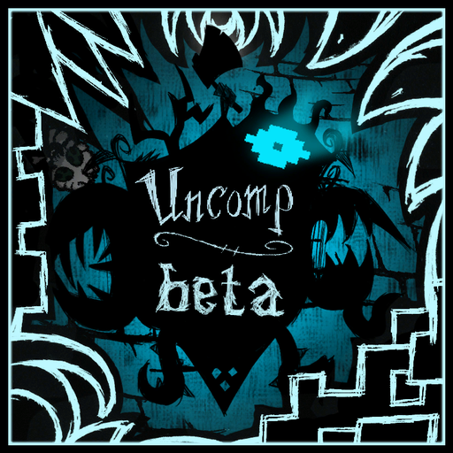

中文源码百科
永不妥协测试版
查阅首领打法、季节威胁、角色改动和宝石学，也可以按房间配置找默认值，或按材料查制作与兑换。

没有匹配的词条，请调整搜索或分类。

常用称呼 Snowstorms、猫眼护目镜、尖刺霜草
冬季暴风雪分全域和局部天气，防护装备与近距离掩体能抵消移动惩罚。
暴风雪默认开启。进入冬季或载入世界时，世界周期达到默认门槛 5 后可以启动或恢复计时。新计时为 3 个游戏日再加 0–120 秒。计时到期后，通常先预警约 60 秒，再进入持续 320–360 秒的暴雪。冬季结束会停止暴雪与计时。
全域暴雪或局部暴雪中，无防护玩家移速乘 0.75。护目镜视野、骑乘、熊皮背心、雨罩，或角色 6 单位内有适用的墙、火或掩体，均可免去该移动惩罚。
玩家监测器可以在暴雪中生成雪堆。建筑脚本中隐藏容器的积雪逻辑当前处于注释状态，岩浆池和龙鳞火炉等仍有防雪堆标签。
相关配置 2
版本与核对来源
测试版 v6.0.3.8 · 汉化 20260926.1
- 测试版 ·
modinfo.lua:451 - 测试版 ·
modinfo.lua:463 - 测试版 ·
init/init_weather/init_harder_weather.lua:130 - 测试版 ·
scripts/components/um_snow_stormspawner.lua:11 - 测试版 ·
scripts/components/um_snow_stormspawner.lua:100 - 测试版 ·
scripts/components/um_snow_stormspawner.lua:123 - 测试版 ·
scripts/components/um_snow_stormspawner.lua:141 - 测试版 ·
scripts/components/um_snow_stormspawner.lua:176 - 测试版 ·
scripts/components/snowstormwatcher.lua:45 - 测试版 ·
init/init_weather/init_snowstorm_structures.lua:126 - 汉化补丁 ·
init/init_strings/init_names.lua:35 - 汉化补丁 ·
init/init_strings/init_names.lua:692

常用称呼 Magma Caves、Flooded Caves、月岛、蓝蘑菇林
洞穴配置会改变新世界的地形、入口和宝石学锻造台的位置。
默认 lunar_cave 在月岛提供潮湿陷坑入口，对应离大陆洞穴区域。cave 将相关区域放在蓝蘑菇林方向。off 保留原版月亮石窟。
熔岩洞穴和宝石学默认开启。两者同时启用时，新洞穴在熔岩区域要求生成宝石学锻造台。关闭熔岩洞穴并保留宝石学时，锻造台转入远古遗迹。
相关配置 4
版本与核对来源
测试版 v6.0.3.8 · 汉化 20260926.1
- 测试版 ·
modinfo.lua:556 - 测试版 ·
scripts/map/tasks/forest/moonisland.lua:19 - 测试版 ·
scripts/map/tasks/caves/mushroom_tasks.lua:46 - 测试版 ·
scripts/map/tasks/caves/magma_cave.lua:103 - 汉化补丁 ·
init/init_strings/init_names.lua:784

常用称呼 Hooded Forest、巨型红杉、巨树森林、月台森林、高齿蕨
默认替代原来的地表月台森林。用巨型红杉、活动石板和蛛网认路，可在此找到黑寡妇和虫茧。
新地表同时开启世界生成总开关与连帽森林时，改造原来的 Forest hunters 区域。该区域保留月台和海象房间，另有连帽入口、蜘蛛林和红杉林等房间。岛屿冒险的海难任务表另加专用连帽森林，房间组合与地表不同。
蛛网巢和虫茧指向黑寡妇战区。蜘蛛林和海象区域的一些活动石板下藏有连帽伏击蜘蛛。想找宝石可先查看黑寡妇的触发方式与能掉宝石的茧型。
完好的巨型红杉需要 25 点砍伐工作量。砍伐会从树冠抖落树枝、木头，也可能有青蛙或蜘蛛。砍到终点会再抖落一批资源，可能含鸟蛋、羽毛或鸟巢。树干留下并开始 3 天再生计时。
相关配置 2
版本与核对来源
测试版 v6.0.3.8 · 汉化 20260926.1
- 测试版 ·
modworldgenmain.lua:7 - 测试版 ·
modinfo.lua:539 - 测试版 ·
scripts/map/tasks/forest/giant_trees.lua:4 - 测试版 ·
scripts/map/tasks/forest/giant_trees.lua:11 - 测试版 ·
scripts/map/tasks/forest/giant_trees.lua:55 - 测试版 ·
scripts/map/tasks/forest/giant_trees.lua:84 - 测试版 ·
scripts/map/rooms/forest/gianttreesrooms.lua:146 - 测试版 ·
scripts/map/rooms/forest/gianttreesrooms.lua:173 - 测试版 ·
scripts/map/rooms/forest/gianttreesrooms.lua:258 - 测试版 ·
scripts/prefabs/widowwebspawner.lua:10 - 测试版 ·
scripts/prefabs/giant_tree.lua:98 - 测试版 ·
scripts/prefabs/giant_tree.lua:361 - 测试版 ·
scripts/prefabs/giant_tree.lua:430 - 测试版 ·
scripts/prefabs/giant_tree.lua:441 - 测试版 ·
scripts/prefabs/giant_tree.lua:452 - 汉化补丁 ·
init/init_strings/init_names.lua:232 - 汉化补丁 ·
init/init_strings/init_names.lua:251 - 汉化补丁 ·
init/init_strings/init_names.lua:303

常用称呼 Boiling Springs、Broiling Hills、沸腾地带、温泉、浴球、泡澡、温暖洞穴
改造原版龙蝇荒地，沿温泉找蜗龙裂缝、龙蝇竞技场和熔岩洞穴入口。浴球还能恢复生命上限。
世界生成总开关开启时，新地表的 Badlands 会换成温泉、岩地、猎犬区和龙蝇竞技场。岩地的裂缝会出蜗龙，温泉可散见于不同房间。地表任务表另要求生成温暖洞穴入口。岛屿冒险的海难也有温泉分区，使用另一套房间。
默认开启的浴球调整把配方改为 3 个月树花和 3 个硝石，科技为 CELESTIAL_THREE。投进沸腾温泉后，浴球效果持续 60 秒。待在池内每秒去除 0.9 个百分点的生命上限惩罚，并增加最多 4 点潮湿，防水可抵消这部分潮湿。池内每秒还会使体温上升 0.3℃。
新月状态变化时，未投浴球的温泉会变暗，并关闭投浴球功能。进入黑水会施加强制疯狂状态，离池时解除温泉施加的状态。之后白天状态变化时，未投浴球的暗色温泉会恢复原色。
相关配置 3
版本与核对来源
测试版 v6.0.3.8 · 汉化 20260926.1
- 测试版 ·
modworldgenmain.lua:7 - 测试版 ·
modinfo.lua:556 - 测试版 ·
modinfo.lua:614 - 测试版 ·
scripts/map/tasks/forest/broiling_hills.lua:12 - 测试版 ·
scripts/map/tasks/forest/broiling_hills.lua:23 - 测试版 ·
scripts/map/tasks/forest/broiling_hills.lua:52 - 测试版 ·
scripts/map/tasks/forest/broiling_hills.lua:103 - 测试版 ·
scripts/map/rooms/forest/UM_BoilingFields.lua:52 - 测试版 ·
scripts/map/rooms/forest/UM_BoilingFields.lua:144 - 测试版 ·
scripts/prefabs/um_hotspring.lua:95 - 测试版 ·
scripts/prefabs/um_hotspring.lua:106 - 测试版 ·
scripts/prefabs/um_hotspring.lua:145 - 测试版 ·
scripts/prefabs/um_hotspring.lua:152 - 测试版 ·
scripts/prefabs/um_hotspring.lua:197 - 测试版 ·
scripts/prefabs/um_hotspring.lua:343 - 测试版 ·
init/init_recipes/recipe_changes.lua:154 - 汉化补丁 ·
init/init_strings/init_names.lua:168 - 汉化补丁 ·
init/init_strings/init_names.lua:176

常用称呼 Oasis Desert、Lightning Bluff、蚁狮沙漠、荒地合并、猎犬丘
部分原龙蝇荒地房间并入绿洲，绿洲周边可以找到草地、猎犬丘、仙人掌和风滚草。
启用世界生成总开关的新地表，绿洲所在的 Lightning Bluff 区域加入开阔草地与猎犬丘房间。开阔草地有草和兔洞，猎犬丘区有矿石、猎犬骨和猎犬丘。新背景房间还可分布仙人掌、风滚草生成点和草蜥蜴。
新房间带沙尘暴标签，原绿洲的雷区和蚁狮房也仍有这个标签。复活石、虫洞和普通洞穴入口都能被分配到改造后的绿洲，具体落点看地图生成。夏季可以在绿洲沙漠找蚁狮交易或开战。
相关配置 1
版本与核对来源
测试版 v6.0.3.8 · 汉化 20260926.1
- 测试版 ·
modworldgenmain.lua:7 - 测试版 ·
scripts/map/tasks/forest/merged_desert.lua:4 - 测试版 ·
scripts/map/tasks/forest/merged_desert.lua:16 - 测试版 ·
scripts/map/tasks/forest/merged_desert.lua:29 - 测试版 ·
scripts/map/rooms/forest/UM_LightningBluff.lua:41 - 测试版 ·
scripts/map/rooms/forest/UM_LightningBluff.lua:63 - 测试版 ·
scripts/map/rooms/forest/UM_LightningBluff.lua:78

常用称呼 Rice、Lice、水稻、烤稻米、水稻池、沼泽灌木
到沼泽小水面找水稻。生稻米没有腐烂计时，下锅的稻米值比烤稻米高。
开启世界生成总开关和水稻设置后，新地表的沼泽任务会加入普通、密集两种稻田房间。找被陆地包围的小片水面，稻田生成器会在水面附近寻找种植点。沼泽的灌木和雾另由地形脚本加入。
靠近水稻可采收稻米，碰撞事件也可触发掉落并转为采过的状态。采后沿用芦苇的 3 天再生间隔，冬天停长。水稻再生时，若 1.5 单位内有船，会移除该株。
生稻米基础饱食为 12.5，食物类型为难吃蔬菜，能直接吃的角色取决于饮食规则。烤稻米属普通蔬菜，基础饱食 12.5、生命 −1，并有腐烂计时。下锅时两者均提供 1 蔬菜值，生米提供 1 稻米值，烤米只提供 0.5。
相关配置 2
版本与核对来源
测试版 v6.0.3.8 · 汉化 20260926.1
- 测试版 ·
modworldgenmain.lua:7 - 测试版 ·
modinfo.lua:552 - 测试版 ·
scripts/map/tasks/forest/squeltch.lua:7 - 测试版 ·
scripts/map/tasks/forest/squeltch.lua:36 - 测试版 ·
scripts/map/tasks/forest/squeltch.lua:70 - 测试版 ·
scripts/map/tasks/forest/squeltch.lua:85 - 测试版 ·
scripts/prefabs/riceplantspawner.lua:116 - 测试版 ·
scripts/prefabs/riceplant.lua:24 - 测试版 ·
scripts/prefabs/riceplant.lua:47 - 测试版 ·
scripts/prefabs/riceplant.lua:100 - 测试版 ·
scripts/prefabs/riceplant.lua:122 - 测试版 ·
scripts/prefabs/rice.lua:55 - 测试版 ·
scripts/prefabs/rice.lua:120 - 测试版 ·
scripts/prefabs/rice.lua:125 - 测试版 ·
init/init_food/init_crockpot.lua:553 - 测试版 ·
init/init_food/init_crockpot.lua:555 - 汉化补丁 ·
init/init_strings/init_names.lua:186 - 汉化补丁 ·
init/init_strings/init_names.lua:188 - 汉化补丁 ·
init/init_strings/init_names.lua:190

常用称呼 Lunar Island、Moon Island、Carrion Bees、腐臭蜂、腐臭蜂巢、月岛洞穴入口
海滩、矿区和森林都可能遇到腐臭蜂巢。腐臭蜂会在死亡时爆出月光孢子，蜂帽可免这次爆炸伤害。
启用世界生成总开关和腐臭蜂后，新月岛海滩加入腐臭蜂巢，矿区和森林也各新增一类有蜂巢的房间。潮湿洞穴设置为默认 lunar_cave 时，月岛海滩任务还会增加通往地下潮湿区域的入口。
腐臭蜂巢有 900 生命，受击时会放出蜂群。野外腐臭蜂有 250 生命、34 点基础攻击。清醒时死亡通常会爆出孢子，对符合条件的玩家造成 25 点伤害，装备蜂帽可免这次爆炸伤害。电击命中后会令仍存活的腐臭蜂立即死亡，近身时也要留意孢子。击破蜂巢固定掉 3 份腐臭蜂蜜和 1 个同名的腐臭蜂巢材料。
当前风暴节点脚本检查 LUNAR_BEES，菜单的腐臭蜂开关实际生成 MOON_BEES。月岛世界生成读取的是正确的菜单键，可以作为稳定的寻找路线。
相关配置 3
版本与核对来源
测试版 v6.0.3.8 · 汉化 20260926.1
- 测试版 ·
modworldgenmain.lua:7 - 测试版 ·
modinfo.lua:558 - 测试版 ·
modinfo.lua:871 - 测试版 ·
scripts/map/tasks/forest/moonisland.lua:1 - 测试版 ·
scripts/map/tasks/forest/moonisland.lua:19 - 测试版 ·
scripts/map/rooms/forest/UM_moonisland.lua:1 - 测试版 ·
scripts/map/rooms/forest/UM_moonisland.lua:31 - 测试版 ·
scripts/prefabs/um_beehive_moon.lua:125 - 测试版 ·
scripts/prefabs/um_beehive_moon.lua:208 - 测试版 ·
scripts/prefabs/um_beehive_moon.lua:233 - 测试版 ·
scripts/prefabs/um_bee_moon.lua:116 - 测试版 ·
scripts/prefabs/um_bee_moon.lua:133 - 测试版 ·
scripts/prefabs/um_bee_moon.lua:153 - 测试版 ·
scripts/prefabs/um_bee_moon.lua:257 - 测试版 ·
scripts/prefabs/um_bee_moon.lua:264 - 测试版 ·
postinit/components/moonstorms.lua:40 - 测试版 ·
init/init_configs.lua:21 - 汉化补丁 ·
init/init_strings/init_names.lua:729 - 汉化补丁 ·
init/init_strings/init_names.lua:731 - 汉化补丁 ·
init/init_strings/init_names.lua:732 - 汉化补丁 ·
init/init_strings/init_names.lua:739

常用称呼 Spiny Rimeweed、Rimeweed、霜草荆棘、霜花、霜冻藤蔓、霜鞭、局部暴雪
全域暴雪期间可能长在可采植物旁，成熟后自带局部暴雪。尽早清理可减少荆棘蔓延，等成熟则有更多材料。
启用暴风雪后，冬季全域暴雪会尝试在可采植物旁生成尖刺霜草。生成检查要求世界周期严格超过冬季天气门槛，默认是 5。候选有时限定为茂密草丛、芦苇或仙人掌。已成熟的植株有自己维持的局部暴雪，全域天气结束后仍可能继续。
主株有 600 生命，荆棘有 200 生命。生成半天后进入第二阶段，再过一天进入第三阶段。扩散可在周边可采植物附近连成荆棘，成熟主株受攻击还会反击并施加寒冷。打掉主株可一起清掉相连的荆棘。离开冬季后霜草会清理。
第一阶段固定掉 1 根霜冻藤蔓。第二阶段掉 2 根，并有 25% 概率掉霜鞭。第三阶段也掉 2 根，另以各一半概率掉霜花或霜鞭。藤蔓可做霜冻外壳或下锅，霜花可用于冰镇龙舌兰。
相关配置 2
版本与核对来源
测试版 v6.0.3.8 · 汉化 20260926.1
- 测试版 ·
modinfo.lua:451 - 测试版 ·
modinfo.lua:463 - 测试版 ·
init/init_weather/init_harder_weather.lua:130 - 测试版 ·
scripts/components/um_snow_stormspawner.lua:21 - 测试版 ·
scripts/components/um_snow_stormspawner.lua:30 - 测试版 ·
scripts/components/um_snow_stormspawner.lua:121 - 测试版 ·
scripts/components/snowstormwatcher.lua:49 - 测试版 ·
scripts/prefabs/um_rimeweed.lua:43 - 测试版 ·
scripts/prefabs/um_rimeweed.lua:273 - 测试版 ·
scripts/prefabs/um_rimeweed.lua:383 - 测试版 ·
scripts/prefabs/um_rimeweed.lua:450 - 测试版 ·
scripts/prefabs/um_rimeweed.lua:463 - 测试版 ·
scripts/prefabs/um_rimeweed.lua:496 - 测试版 ·
scripts/prefabs/um_rimeweed.lua:519 - 测试版 ·
scripts/prefabs/um_rimeweed.lua:603 - 测试版 ·
scripts/prefabs/um_rimeweed.lua:634 - 测试版 ·
scripts/prefabs/um_rimeweed.lua:726 - 测试版 ·
init/init_recipes/recipes.lua:127 - 测试版 ·
scripts/um_preparedfoods.lua:660 - 测试版 ·
scripts/um_preparedfoods.lua:696 - 汉化补丁 ·
init/init_strings/init_names.lua:692 - 汉化补丁 ·
init/init_strings/init_names.lua:695 - 汉化补丁 ·
init/init_strings/init_names.lua:696 - 汉化补丁 ·
init/init_strings/init_names.lua:697
温奇擅长地下通道和鼠穴储物，夜间走得更快。
生命 175、饥饿 175、理智 125。移动倍率白天和黄昏为 1.15，夜间为 1.25。可以吃生肉和怪物肉。丢下非重物或触发符合条件的堆叠合并通常会扣 5 理智。
空手右键合适的地面可打临时鼠穴。服务端要求饥饿严格大于 15 且未站在船等平台上，打洞消耗 15 饥饿，临时鼠穴约 180 秒消失。定居鼠穴消耗 20 饥饿，每个分片受一处定居鼠穴的限制。两类鼠穴在同一分片连接温奇的口袋空间。
诅咒激活时，普通物品栏从 15 格降到 10 格，后 5 格的内容会被丢出。
相关配置 1
版本与核对来源
测试版 v6.0.3.8 · 汉化 20260926.1
- 测试版 ·
modinfo.lua:265 - 测试版 ·
modmain.lua:113 - 测试版 ·
scripts/prefabs/winky.lua:61 - 测试版 ·
scripts/prefabs/winky.lua:145 - 测试版 ·
scripts/prefabs/winky.lua:170 - 测试版 ·
init/init_actions.lua:140 - 测试版 ·
init/init_recipes/recipes.lua:737 - 测试版 ·
scripts/prefabs/uncompromising_rat.lua:1463 - 汉化补丁 ·
init/init_character_um.lua:6

常用称呼 Wixie、薇茜、维希、弹弓妹、沃尔特重做
测试版默认启用薇希和沃尔特重做，加入幽闭恐惧与专属弹弓配方。
相关配置默认开启。薇希的生命为 130、饥饿 150、理智 200。汉化的角色初始化写作「薇希」，角色专用文本又使用「薇茜」。两种写法都可搜索。
附近战斗生物、躲藏、骑乘、邻近墙壁或树木以及部分护具都会影响幽闭恐惧。部分头部和身体护甲各增加 0.2 的基础影响。累积到 100% 触发恐慌，降到 0 后解除并进入 10 秒冷却。
专属弹弓包括浮木弹弓-玛蒂尔达、活木弹弓-切齿、绝望弹弓-杰西和光芒弹弓-克莱尔。杰西和克莱尔分别在暗影与月亮制作站制作，最终生效的配方仅检查薇希制作标签和制作站。
解开地表的钢琴、破旧玩具与摆钟谜题可召出暗影薇希，击败后获得滑行手杖。薇希使用手杖冲刺时会把敌人推得更远。
相关配置 1
版本与核对来源
测试版 v6.0.3.8 · 汉化 20260926.1
- 测试版 ·
modmain.lua:355 - 测试版 ·
modmain.lua:382 - 测试版 ·
scripts/prefabs/wixie.lua:77 - 测试版 ·
scripts/prefabs/wixie.lua:176 - 测试版 ·
init/init_recipes/init_recipes.lua:84 - 测试版 ·
init/init_recipes/recipes_wixie.lua:11 - 测试版 ·
init/init_recipes/recipes_wixie.lua:141 - 汉化补丁 ·
init/init_character_um.lua:18 - 汉化补丁 ·
wixie_postinit/wixie_strings.lua:9 - 汉化补丁 ·
init/init_strings/init_names.lua:571
沃托姆靠近战积攒肾上腺素，强化状态与技能和房间配置有关。
角色默认可用，生命 225、饥饿 120、理智 120。
肾上腺素至少 25% 时，符合条件的非投射物攻击会推迟自然衰减 10 秒。未进入强化或拒死状态时，25% 至不足 50%、50% 至不足 75%、75% 以上分别获得 5、4、3 点。肾上腺素至少 25%、且未强化时，部分受伤也可按伤害的 25% 向下取整增加。
满肾上腺素进入强化要求对应的第二档强化技能。强化时默认承伤倍率为 5，房间可选 2 到 5，配置默认也计入护甲损耗。
相关配置 3
版本与核对来源
测试版 v6.0.3.8 · 汉化 20260926.1
- 测试版 ·
modinfo.lua:266 - 测试版 ·
modinfo.lua:269 - 测试版 ·
scripts/prefabs/wathom.lua:12 - 测试版 ·
scripts/prefabs/wathom.lua:359 - 测试版 ·
scripts/prefabs/wathom.lua:535 - 测试版 ·
init/init_wathom.lua:1576 - 汉化补丁 ·
init/init_character_um.lua:25

常用称呼 Warly、厨师、大厨、厨师袋、食物记忆
进食收益、重复料理记忆和物品栏内宰杀战利品都有调整，厨师袋可单独保留原版行为。
角色改动默认完整开启。食物记忆持续 3 个游戏日，重复进食衰减表的五档倍率为 60%、50%、35%、20%、10%。
有正饱食度收益的食物额外恢复该食物饱食值的 20%。关闭食物持续恢复时，无老兵诅咒的沃利也额外获得正生命值与正理智值的 20%。开启食物持续恢复后，无诅咒沃利在该机制下的生命与理智结算量按 1.2 倍计算，再判定走即时还是持续恢复。
在物品栏执行宰杀时，沃利可按被宰杀堆叠数量，从该猎物的战利品池额外抽取。默认厨师袋改为只能放入物品栏口袋的便携容器，打开会落地，并且不能装备或点燃。关闭厨师袋改动的档位仍保留沃利的其他改动。
相关配置 3
版本与核对来源
测试版 v6.0.3.8 · 汉化 20260926.1
- 测试版 ·
modinfo.lua:380 - 测试版 ·
init/init_tuning.lua:198 - 测试版 ·
init/init_character_changes/warly.lua:5 - 测试版 ·
init/init_character_changes/warly.lua:26 - 测试版 ·
init/init_character_changes/warly.lua:92 - 测试版 ·
init/init_character_changes/warly.lua:124 - 测试版 ·
init/init_food/init_foodregen.lua:4 - 测试版 ·
init/init_actions.lua:499 - 汉化补丁 ·
init/init_strings/init_names.lua:85

常用称呼 Winona、女工、工程师、投石机钓鱼、脆弱玫瑰、器械箱、电能转换套件、蓄电池
饱食状态影响工作效率和工具消耗。投石机捕鱼、脆弱玫瑰与专属配方也分别可调。
饱食度至少 66.6% 时，砍伐、采矿、敲击和划船按 1.5 倍工作量结算，适用动作的工具耐久消耗乘 0.5。低于饥饿阈值时，分别改为 0.666 和 1.333 倍。中间区间沿用基础倍率。
受影响的工作与攻击可额外消耗饱食度，重复触发间隔为 0.3 秒。高饱食区间中，砍伐基础消耗为 0.2，采矿与敲击为 0.333，挖掘为 0.5，之后乘角色当前饥饿速率修正。低于饥饿阈值或处于骑乘状态时，跳过额外饥饿消耗。
默认开启投石机捕鱼调整，命中的适用海鱼会被抛出。默认开启玫瑰调整，薇诺娜受到致命伤时，若没有优先触发的复活道具，可消耗物品栏中的一朵脆弱玫瑰阻止死亡，将生命和理智设为 50%、饱食设为三分之二，并增加 25 个百分点的生命上限惩罚。
专属物品开关默认开启，添加器械箱、电能转换套件和蓄电池配方。电能转换套件在炼金引擎档解锁，一次制作蓄电池得到 3 个。
相关配置 4
版本与核对来源
测试版 v6.0.3.8 · 汉化 20260926.1
- 测试版 ·
modinfo.lua:371 - 测试版 ·
modinfo.lua:374 - 测试版 ·
modinfo.lua:375 - 测试版 ·
modinfo.lua:376 - 测试版 ·
init/init_character_changes/winona.lua:9 - 测试版 ·
init/init_character_changes/winona.lua:16 - 测试版 ·
init/init_character_changes/winona.lua:106 - 测试版 ·
init/init_character_changes/winona.lua:170 - 测试版 ·
init/init_character_changes/winona.lua:459 - 测试版 ·
postinit/components/health.lua:149 - 测试版 ·
postinit/components/health.lua:180 - 测试版 ·
init/init_recipes/recipes.lua:289 - 汉化补丁 ·
init/init_strings/init_strings.lua:876 - 汉化补丁 ·
init/init_strings/init_names.lua:433 - 汉化补丁 ·
init/init_strings/init_names.lua:461 - 汉化补丁 ·
init/init_strings/init_names.lua:474

常用称呼 Wanda、钟表匠、警钟、第二次机会表、溯源表、裂缝表
警钟与第二次机会表的平衡选项默认关闭，溯源表和裂缝表的地点命名仍单独生效。
开启旺达平衡调整后，装有燃料的警钟按年龄应用伤害倍率。年轻为 1 倍，中年为 68/51，老年为 102/51。该段调整要求旺达未骑乘。
同一开关启用后，复活目标当前生命上限惩罚低于 75% 时，额外增加 25 个百分点。旺达以鬼魂作祟成功自救时，表会损毁并掉出拆解物。
溯源表可以给锚点命名，制成裂缝表时沿用名称。已标记的裂缝表需要目标分片可用，打开裂缝后回到溯源表，保留锚点与名称，并进入溯源表冷却。命名逻辑独立于旺达平衡开关。
旺达实际获得诅咒后，特定暗影生物和梦魇生物造成的伤害会先被替换为按最大生命值换算的老化伤害，再按原有老化流程结算。
相关配置 2
版本与核对来源
测试版 v6.0.3.8 · 汉化 20260926.1
- 测试版 ·
modinfo.lua:426 - 测试版 ·
init/init_character_changes/wanda.lua:18 - 测试版 ·
init/init_character_changes/wanda.lua:22 - 测试版 ·
init/init_character_changes/wanda.lua:45 - 测试版 ·
init/init_character_changes/wanda.lua:111 - 测试版 ·
init/init_character_changes/wanda.lua:174 - 测试版 ·
postinit/components/oldager.lua:5 - 汉化补丁 ·
init/init_strings/init_names.lua:91

常用称呼 Wes、小丑、哑剧演员、韦斯仇恨、蝙蝠仇恨
老兵诅咒下，韦斯会主动吸引合条件的敌人。蝙蝠的目标保留另有一条独立规则。
韦斯获得老兵诅咒后才会周期检查并吸引敌人。通常检查距离为 16，浣猫为 12，触手、洞穴触手臂、眼球草与大型暗影触手为 4。敌人仍须能以韦斯为目标，现有交战对象和跟随关系也会影响结果。
普通蝙蝠与吸血蝙蝠会保留已经选中的韦斯作为目标。已有其他目标时，这段调整会跳过原本的周期搜索。蝙蝠规则独立于韦斯是否获得诅咒。
相关配置 1
版本与核对来源
测试版 v6.0.3.8 · 汉化 20260926.1
- 测试版 ·
modinfo.lua:231 - 测试版 ·
init/init_character_changes/wes.lua:1 - 测试版 ·
init/init_character_changes/wes.lua:24 - 测试版 ·
init/init_character_changes/wes.lua:94 - 测试版 ·
init/init_character_changes/wes.lua:124 - 汉化补丁 ·
init/init_strings/init_names.lua:93

常用称呼 Wendy、鬼女、姐姐、阿比盖尔、姐妹骨灰罐、哀悼荣耀
让放在姐妹骨灰罐里的花瓣腐烂，可以获得哀悼荣耀。
默认开启。普通花瓣腐烂时，若直接由姐妹骨灰罐持有，腐烂产物会改为哀悼荣耀。把花瓣放在其他容器里腐烂仍走普通流程。转化使用花瓣自身的腐烂计时。
相关配置 1
版本与核对来源
测试版 v6.0.3.8 · 汉化 20260926.1
- 测试版 ·
modinfo.lua:303 - 测试版 ·
init/init_postinit.lua:190 - 测试版 ·
postinit/prefabs/petals.lua:4 - 汉化补丁 ·
init/init_strings/init_names.lua:94 - 汉化补丁 ·
init/init_strings/init_tooltips.lua:35

常用称呼 Willow、火女、纵火者、伯尼、薇洛的打火机、潜伏恐惧、烟雾
手持未激活的伯尼可抑制潜伏恐惧的生成，打火机引导能清理近处烟雾。
默认开启。将未激活的伯尼装备在手上时，生成器判定角色具有暗影支配，跳过本次针对该角色的潜伏恐惧生成。
打火机获得可引导施法能力后，引导期间每 0.3 秒移除 12 单位内带烟雾标签的实体。停止引导时停止清理。此功能走打火机的技能刷新逻辑，独立于伯尼开关。
相关配置 1
版本与核对来源
测试版 v6.0.3.8 · 汉化 20260926.1
- 测试版 ·
modinfo.lua:301 - 测试版 ·
init/init_character_changes/willow_bernie.lua:4 - 测试版 ·
init/init_character_changes/willow.lua:13 - 测试版 ·
scripts/components/uncompromising_shadowcreaturespawner.lua:105 - 测试版 ·
scripts/components/uncompromising_shadowcreaturespawner.lua:159 - 汉化补丁 ·
init/init_strings/init_names.lua:15 - 汉化补丁 ·
init/init_strings/init_names.lua:84 - 汉化补丁 ·
init/init_strings/init_strings.lua:884

常用称呼 Walter、童子军、沃比、Woby、沃比饥饿表
重做调整了沃比的变身门槛与饥饿表，沃尔特的诅咒另有受伤和恢复规则。
沃尔特与薇克茜重做默认开启。小沃比的饱食度达到 95% 时变大，大沃比降至 30% 时变小。大沃比降到 40% 或以下时可触发一次饥饿提醒，重新高于 40% 才会重置提醒。
默认启用经典沃比饥饿表。该选项由沃尔特与薇克茜重做载入，对有沃尔特标记的角色隐藏原表并以沃比事件更新自定义表。
沃比受击会让主人损失本次伤害量二十分之一的理智，同一只沃比的这项转移有 0.3 秒触发间隔。带老兵诅咒的玩家抚摸小沃比，每只小沃比每游戏日最多可帮玩家扣除 5 个百分点的理智上限惩罚。
沃尔特实际获得诅咒后，符合条件的受伤会增加理智上限惩罚，最多 75%。普通伤害取绝对值的 50%，持续伤害取 25%，再按基础最大理智和防护修正换算。后续受伤通常重置一天计时，恢复程序每次扣除 10 个百分点。
相关配置 3
版本与核对来源
测试版 v6.0.3.8 · 汉化 20260926.1
- 测试版 ·
modinfo.lua:258 - 测试版 ·
modinfo.lua:261 - 测试版 ·
init/init_postinit.lua:342 - 测试版 ·
wixie_postinit/prefabs/wobysmall.lua:30 - 测试版 ·
wixie_postinit/prefabs/wobysmall.lua:60 - 测试版 ·
wixie_postinit/prefabs/wobysmall.lua:134 - 测试版 ·
wixie_postinit/prefabs/wobybig.lua:43 - 测试版 ·
wixie_postinit/widgets/controls.lua:26 - 测试版 ·
init/init_character_changes/walter.lua:10 - 测试版 ·
init/init_character_changes/walter.lua:27 - 汉化补丁 ·
init/init_strings/init_names.lua:81 - 汉化补丁 ·
init/init_strings/init_strings.lua:880

常用称呼 Wurt、鱼妹、鱼人妹、烤稻米、月亮鱼人
沃特的寻路表纳入潮湿陷坑的积水地形，烤稻米列入食物偏好。
模组把潮湿陷坑的普通积水、石窟积水和沸腾积水纳入沃特可通过的寻路地形。是否能遇到这些地形仍取决于洞穴生成配置。
烤稻米被登记为沃特的偏好食物，偏好倍率 1.33。开启鱼人调整时，月亮鱼人和月亮鱼人守卫更换领袖会跳过原本的领袖变更回调。
相关配置 2
版本与核对来源
测试版 v6.0.3.8 · 汉化 20260926.1
- 测试版 ·
modinfo.lua:558 - 测试版 ·
modinfo.lua:893 - 测试版 ·
init/init_character_changes/wurt.lua:6 - 测试版 ·
init/init_character_changes/wurt.lua:19 - 测试版 ·
init/init_character_changes/wurt.lua:26 - 汉化补丁 ·
init/init_strings/init_names.lua:188 - 汉化补丁 ·
init/init_strings/init_strings.lua:886

常用称呼 Woodie、伐木工、海狸人、鹅人、鹅人 II、变鹅、鹅人防水
点出对应鹅人技能后，伍迪变身为鹅人时会获得额外的防水能力。
检测到伍迪处于鹅人形态且已激活「鹅人 II」技能时，把形态自带防水值设为 2.0。变身和激活技能后延迟 1 秒检查，读档后延迟 2 秒检查。
版本与核对来源
测试版 v6.0.3.8 · 汉化 20260926.1
- 测试版 ·
init/init_gamemodes/init_uncompromising_mode.lua:227 - 测试版 ·
init/init_character_changes/woodie.lua:76 - 测试版 ·
init/init_character_changes/woodie.lua:96 - 汉化补丁 ·
init/init_strings/init_names.lua:89

常用称呼 Wortox、小恶魔、恶魔人、恶魔、双尾心、灵魂治疗
普通灵魂改为持续治疗，技能树可改变治疗方式，也能把双尾心做成抵消致命伤的道具。
默认范围为 8，目标必须存活、可见且处于范围内。优先选择已受伤的玩家，旺达默认不在普通治疗名单内。未受技能影响时，只有一名合格伤员的结算量为 10 点生命，目标越多，每名目标分到的治疗越少。淘气包目标的治疗量再减半。
灵魂触及让掉落的灵魂靠近伤员并增大治疗范围。后续治疗技能可增加即时治疗，或加快后续治疗、减轻多人治疗衰减并给目标附加灵魂振奋。
点出对应技能后，可用 20 个灵魂制作双尾心。将它放在物品栏中，可在遭受致命伤时消耗它以抵消这次死亡，并增加 25 个百分点的生命上限惩罚。若双尾心绑定的沃拓克斯点出进阶技能，还会释放灵魂。
相关配置 1
版本与核对来源
测试版 v6.0.3.8 · 汉化 20260926.1
- 测试版 ·
modinfo.lua:396 - 测试版 ·
init/init_character_changes/wortox.lua:11 - 测试版 ·
init/init_character_changes/wortox.lua:42 - 测试版 ·
init/init_character_changes/wortox.lua:128 - 测试版 ·
init/init_character_changes/wortox.lua:163 - 测试版 ·
init/init_character_changes/wortox.lua:180 - 测试版 ·
postinit/components/health.lua:78 - 测试版 ·
postinit/components/health.lua:123 - 测试版 ·
scripts/prefabs/healthregenbuff_vetcurse.lua:8 - 汉化补丁 ·
init/init_strings/init_descriptions/skilltreestrings.lua:219 - 汉化补丁 ·
init/init_strings/init_names.lua:82

常用称呼 Wormwood、植物人、伍姆伍德、荆棘陷阱、光合作用、改进光合作用
挖植物额外掉理智，火焰弱点加重，荆棘陷阱一次能制作两个。
默认火焰伤害倍率从 1.25 提高到 1.75，燃烧时间从约 4.3 秒提高到 6.66 秒。自己挖掉植物并触发植物死亡事件时，额外失去 5 点理智，并清除尚未结算的种植理智奖励。
默认一次制作 2 个荆棘陷阱，普通陷阱和荆棘护甲的刺击特效不会击中玩家。霜冻外壳有独立的冰刺特效。
点出技能后，季节切换到春季或夏季时会获得一次促进绽放的施肥效果。这两个季节也会加快有肥料时的绽放进度，阻止绽放结束阶段的自然衰减。
相关配置 4
版本与核对来源
测试版 v6.0.3.8 · 汉化 20260926.1
- 测试版 ·
modinfo.lua:418 - 测试版 ·
modinfo.lua:420 - 测试版 ·
modinfo.lua:422 - 测试版 ·
modinfo.lua:425 - 测试版 ·
init/init_tuning.lua:195 - 测试版 ·
init/init_tuning.lua:596 - 测试版 ·
init/init_character_changes/wormwood.lua:24 - 测试版 ·
init/init_character_changes/wormwood.lua:127 - 测试版 ·
init/init_character_changes/wormwood.lua:172 - 测试版 ·
init/init_character_changes/wormwood.lua:196 - 测试版 ·
init/init_character_changes/wormwood.lua:237 - 测试版 ·
init/init_character_changes/skilltree_wormwood.lua:22 - 测试版 ·
init/init_recipes/recipe_changes.lua:354 - 汉化补丁 ·
init/init_strings/init_descriptions/skilltreestrings.lua:158

常用称呼 WX78、机器人、电路、生物扫描、备份底盘
默认雷击会扣理智并充电，备份底盘只保存护盾，测试版生物可以补齐部分电路的扫描来源。
开启 WX-78 雷击调整后，未绝缘且存活、非无敌的 WX-78 被雷击时失去 33 理智，并增加 1 格电量。绝缘时只触发避雷事件。食用小电光浆果补 1 格，电光浆果补 3 格，电光浆果芭菲和蓄电池各补 6 格。
该调整默认开启。玩家写入和读取底盘的备份属性时，只保留 WX-78 的护盾量。
黑寡妇对应超级强化电路，可累积的生物数据上限为 6。蚜虫对应胃增益电路，上限 2；果蝠对应加速电路，上限 2；冰川青年座狼对应制冷电路，上限 6。
相关配置 2
版本与核对来源
测试版 v6.0.3.8 · 汉化 20260926.1
- 测试版 ·
modinfo.lua:304 - 测试版 ·
modinfo.lua:305 - 测试版 ·
init/init_character_changes/wx78.lua:29 - 测试版 ·
init/init_character_changes/wx78.lua:41 - 测试版 ·
init/init_character_changes/wx78.lua:49 - 测试版 ·
init/init_character_changes/wx78.lua:75 - 测试版 ·
init/init_character_changes/wx78.lua:110 - 测试版 ·
scripts/prefabs/zaspberry.lua:144 - 测试版 ·
scripts/prefabs/zaspberry.lua:162 - 测试版 ·
scripts/prefabs/zaspberryparfait.lua:53 - 测试版 ·
scripts/prefabs/powercell.lua:101 - 汉化补丁 ·
init/init_strings/init_names.lua:45 - 汉化补丁 ·
init/init_strings/init_names.lua:180 - 汉化补丁 ·
init/init_strings/init_names.lua:235 - 汉化补丁 ·
init/init_strings/init_names.lua:254 - 汉化补丁 ·
init/init_strings/init_names.lua:258 - 汉化补丁 ·
init/init_strings/init_names.lua:295 - 汉化补丁 ·
init/init_strings/init_names.lua:461

常用称呼 Wickerbottom、老奶奶、图书管理员、月之魔典、实用求雨仪式
队友可向她学习一本科技；默认月之魔典改为只影响附近目标。
默认和保留魔典的档位都能让其他玩家在薇克巴顿身边学习科学机器档位的配方。她提供的是原型制作科技。
默认完整调整将阅读效果改为影响半径 8 内的合格可变异生物、兽化生物和伍迪。伍迪未兽化时可被直接触发变身，已兽化时补满兽化值。魔典可用 3 次，阅读消耗 50 理智。选择保留魔典的档位可沿用原版魔典。
在风暴威胁标记下阅读时，会进入龙卷风分支。有指定转向点时，现有龙卷风会采用该目标的路线编号，120 秒后归零。普通情况下仍调用原版求雨逻辑。
相关配置 1
版本与核对来源
测试版 v6.0.3.8 · 汉化 20260926.1
- 测试版 ·
modinfo.lua:333 - 测试版 ·
init/init_character_changes/wickerbottom.lua:267 - 测试版 ·
init/init_character_changes/wickerbottom.lua:275 - 测试版 ·
init/init_character_changes/wickerbottom.lua:300 - 测试版 ·
init/init_character_changes/wickerbottom.lua:330 - 测试版 ·
init/init_character_changes/wickerbottom.lua:414 - 测试版 ·
init/init_character_changes/wickerbottom.lua:451 - 汉化补丁 ·
init/init_strings/init_names.lua:87

常用称呼 Wolfgang、大力士、强壮值、力量壮举、强力跳跃、暗影连击
强壮值可以花在重击、跳跃和快速工作上，暗影分支可连续命中叠加伤害。
重击基础花费 50 强壮值，技能可逐档降到 25，成功重击的冷却为 5 秒。空手右键可以选择跳跃，普通冷却为 5 秒，跳跃专精缩短到 2.5 秒。月亮路线的相应技能可在强壮形态下用饥饿补足强壮值差额，每缺 1 点强壮值消耗 0.33 饥饿。
快速工作的强壮值成本随目标剩余工作量、动作类型和工具效率变化。满足条件可一次完成工作，工具仍会消耗耐久，较硬的目标也可能增加成本。
对应技能下，命中或成功触发快速工作可积攒连击。每层为暗影连击倍率增加 0.134，最多 5 层；受击或 6 秒内没有续上连击就会清空。
相关配置 1
版本与核对来源
测试版 v6.0.3.8 · 汉化 20260926.1
- 测试版 ·
modinfo.lua:370 - 测试版 ·
init/init_character_changes/wolfgang.lua:12 - 测试版 ·
init/init_character_changes/wolfgang.lua:17 - 测试版 ·
init/init_character_changes/wolfgang.lua:25 - 测试版 ·
init/init_character_changes/wolfgang.lua:364 - 测试版 ·
init/init_character_changes/wolfgang.lua:401 - 测试版 ·
init/init_character_changes/wolfgang.lua:423 - 测试版 ·
init/init_character_changes/wolfgang.lua:482 - 测试版 ·
scripts/components/featsofstrength.lua:15 - 测试版 ·
scripts/components/featsofstrength.lua:41 - 测试版 ·
scripts/components/featsofstrength.lua:89 - 测试版 ·
scripts/components/featsofstrength.lua:136 - 汉化补丁 ·
init/init_strings/init_names.lua:90

常用称呼 Wigfrid、女武神、女武神重做、奔雷矛、战斗吸血、战斗号子
默认完整重做包含战斗恢复削弱、格挡调整和装备改动，另可选择仅保留恢复削弱。
完整启用和奔雷矛恢复档都应用重做，传统档只应用战斗恢复削弱。削弱将恢复组件的下限、上限和额外恢复系数分别设为 0.1089、0.66、0.165。
完整重做下，盾牌格挡持续 2.5 秒，基础冷却 5 秒；还会移除战歌袋的可燃和传火组件。绝望石圆盾的制作与特殊防护见单独词条。
默认奔雷矛和充能奔雷矛的最大使用次数均为 200。启用奔雷矛恢复档后，充能奔雷矛冲刺命中合格目标可以恢复耐久，并受单次冲刺的修复次数上限限制。
相关配置 1
版本与核对来源
测试版 v6.0.3.8 · 汉化 20260926.1
- 测试版 ·
modinfo.lua:359 - 测试版 ·
init/init_tuning.lua:748 - 测试版 ·
init/init_character_changes/wathgrithr.lua:4 - 测试版 ·
init/init_character_changes/wathgrithr.lua:18 - 测试版 ·
init/init_character_changes/wathgrithr.lua:37 - 测试版 ·
init/init_character_changes/wathgrithr.lua:91 - 测试版 ·
postinit/prefabs/spear_wathgrithr.lua:107 - 测试版 ·
postinit/prefabs/spear_wathgrithr.lua:163 - 汉化补丁 ·
init/init_strings/init_names.lua:92
食物恢复较多的生命或理智时，默认会改为持续结算。
默认开启。生命和理智分别判定，单项结算量大于 3 时进入持续恢复，其基础时长参数为该项结算量乘 0.1。数值不超过 3 或角色持有对应免疫标签时即时结算。饱食度按进食逻辑结算。
持续效果按食物 prefab 区分。再次吃同一种食物会延长对应效果，累计剩余时长受基础时长四倍的上限约束。老兵诅咒相关结算有独立分支。
相关配置 1
版本与核对来源
测试版 v6.0.3.8 · 汉化 20260926.1
- 测试版 ·
modinfo.lua:226 - 测试版 ·
init/init_food/init_foodregen.lua:4 - 测试版 ·
init/init_food/init_foodregen.lua:41 - 测试版 ·
scripts/prefabs/healthregenbuff_vetcurse.lua:24 - 测试版 ·
scripts/prefabs/healthregenbuff_vetcurse.lua:101

常用称呼 Gemology、晶洞、宝石学锻造台、鉴定
逐种查 14 种附魔宝石的晶洞来源、地形、交易升级和三档附魔效果。
把晶洞放在地上，用镐敲开。每个晶洞抽三次普通材料、一次宝石池，并有 5% 概率额外抽一次宝石池。抽到附魔宝石后再判定品质，一级 95%、二级 4%、三级 1%。
第一槽放装备，第二槽放宝石。装备与宝石相容时才能附魔。成功会消耗宝石，新附魔耐久设满。重复同种附魔会替换同种，槽满时新增不同种会移除旧附魔。普通附魔组件默认一个槽，具体装备可以有特例。
宝石学和世界生成总开关默认开启，共同控制新洞穴的宝石学地形与资源。既有地图不会因打开这两个开关而补生成相应房间。已有装备与附魔还涉及单独载入的运行代码。
宝石放大镜有 100 点鉴定耐久，远古宝石放大镜和宝石熔岩镜各有 400 点。可以鉴定整叠宝石，每枚消耗 1 点耐久。耐久不足时，只会鉴定能够负担的数量。
以下概率按单颗宝石结算，适用于各颜色的两种附魔宝石。三级已经封顶，交出去有风险。红色交蜗龙只有 25% 留在三级，绿色交龟类只有 40% 留在三级。蚁狮和石虾都不会返还三级，雪怪吃下三级蓝色只掉普通蓝宝石。
查看完整表格 →
汉化中的「碎裂的」「微瑕的」「无暇的」分别对应一级、二级、三级。表中同时列出装备附魔和角色组件触发的效果，涉及移速、工作、战斗、理智和拾取。装备自身还须支持附魔。
查看完整表格 →
同色的两种宝石，能掉落它们的晶洞也可能不同。表中百分比是每次从该晶洞的宝石池抽取时，命中指定宝石的概率，已计入普通宝石等候选掉落。点击晶洞名可查看对应的地形和采集方法。
查看完整表格 →
先从下表的地形取得晶洞，再放到地上用镐敲开。石化蘑菇树与几类矿物都有外观相近的无晶洞版本。
查看完整表格 →
斧砍长成的巨石枝时，藤上掉落按种植位置所属地形的池子抽取。三色蘑菇林、混合菌类区、月亮洞窟、苔藓区、岩石平原、蝙蝠洞、遗迹、喷气孔区和落水洞的池子均能提供对应晶洞。旧树沿用已经保存的掉落，在现有对应地形重新种植可以抽当前池。开启宝石学和蘑菇树调整时，绿树入夏、红树入秋、蓝树入春也有机会自然石化。秋天已有的石虾附近还可能生成孕育中的岩石。
到地表连帽森林的黑寡妇巢旁，用寡妇之爪破开茧。蛞蝓龟或蜗牛龟型、雪怪型、蜗龙型、石虾型的茧各随机给一颗绿、蓝、红、白色附魔宝石，同色两种都可能出现。每颗有 90% 概率为二级、10% 为三级。遗迹迷宫和远古守护者的箱子还可能提供已经附魔的装备。
海难的熔岩地与火山中，开采普通或含金熔岩矿时，14 种附魔宝石都以相同的低权重加入额外掉落池。黑曜石岩石和龙骑士蛋各有 10% 概率给熔岩晶洞，木炭岩有 10% 概率给浮石晶洞。启用岛屿冒险的老虎机战利品时，部分老虎机奖池还会给晶洞。
相关配置 3
版本与核对来源
测试版 v6.0.3.8 · 汉化 20260926.1
- 测试版 ·
modinfo.lua:184 - 测试版 ·
scripts/prefabs/um_gemology_geodes.lua:17 - 测试版 ·
scripts/prefabs/um_gemologyforge.lua:25 - 测试版 ·
scripts/components/gem_enchantable.lua:25 - 测试版 ·
init/init_gamemodes/init_uncompromising_mode.lua:92 - 测试版 ·
scripts/prefabs/um_magnifier.lua:55 - 测试版 ·
scripts/components/gemologyscanner.lua:13 - 测试版 ·
init/init_gemology/trades.lua:87 - 测试版 ·
init/init_gemology/trades.lua:247 - 测试版 ·
init/init_gemology/trades.lua:261 - 测试版 ·
init/init_gemology/trades.lua:411 - 测试版 ·
init/init_gemology/trades.lua:493 - 测试版 ·
scripts/prefabs/snowmong.lua:123 - 测试版 ·
scripts/stategraphs/SGsnowmong.lua:329 - 测试版 ·
scripts/gemology_defs.lua:90 - 测试版 ·
scripts/gemology_defs.lua:228 - 测试版 ·
scripts/gemology_defs.lua:301 - 测试版 ·
scripts/gemology_defs.lua:353 - 测试版 ·
scripts/gemology_defs.lua:421 - 测试版 ·
scripts/gemology_defs.lua:450 - 测试版 ·
scripts/gemology_defs.lua:472 - 测试版 ·
scripts/gemology_defs.lua:581 - 测试版 ·
scripts/gemology_defs.lua:648 - 测试版 ·
scripts/gemology_defs.lua:689 - 测试版 ·
scripts/gemology_defs.lua:742 - 测试版 ·
scripts/gemology_defs.lua:789 - 测试版 ·
scripts/gemology_defs.lua:842 - 测试版 ·
init/init_tuning.lua:400 - 测试版 ·
init/init_gemology/special.lua:5 - 测试版 ·
postinit/components/freezable.lua:21 - 测试版 ·
scripts/prefabs/um_ice_shield.lua:37 - 汉化补丁 ·
init/init_strings/init_names.lua:752 - 汉化补丁 ·
init/init_strings/init_names.lua:764 - 汉化补丁 ·
init/init_strings/init_names.lua:770 - 汉化补丁 ·
init/init_strings/init_names.lua:821 - 汉化补丁 ·
init/init_strings/init_names.lua:853 - 测试版 ·
init/init_gemology/special.lua:44 - 测试版 ·
init/init_gemology/special.lua:83 - 测试版 ·
init/init_gemology/special.lua:111 - 测试版 ·
init/init_gemology/special.lua:129 - 测试版 ·
init/init_gemology/special.lua:149 - 测试版 ·
init/init_gamemodes/init_uncompromising_mode.lua:93 - 测试版 ·
postinit/components/combat.lua:79 - 测试版 ·
postinit/components/combat.lua:92 - 测试版 ·
postinit/components/combat.lua:121 - 测试版 ·
scripts/prefabs/uncompromising_buffs.lua:6 - 测试版 ·
scripts/prefabs/uncompromising_buffs.lua:451 - 测试版 ·
scripts/prefabs/um_ice_shield.lua:69 - 测试版 ·
scripts/prefabs/um_ice_shield.lua:108 - 测试版 ·
init/init_containers.lua:1000 - 测试版 ·
modinfo.lua:167 - 测试版 ·
modworldgenmain.lua:31 - 测试版 ·
scripts/um_gemology_geode_defs.lua:1 - 测试版 ·
scripts/prefabs/um_gemology_geodes.lua:97 - 测试版 ·
scripts/map/tasks/caves/gemology.lua:3 - 测试版 ·
scripts/map/tasks/caves/gemology.lua:47 - 测试版 ·
scripts/map/tasks/caves/gemology.lua:128 - 测试版 ·
scripts/map/tasks/caves/gemology.lua:141 - 测试版 ·
scripts/map/tasks/caves/gemology.lua:167 - 测试版 ·
scripts/map/rooms/caves/gemology.lua:2 - 测试版 ·
scripts/map/rooms/caves/gemology.lua:55 - 测试版 ·
scripts/map/rooms/caves/gemology.lua:117 - 测试版 ·
scripts/map/rooms/caves/gemology.lua:166 - 测试版 ·
scripts/map/rooms/caves/gemology.lua:198 - 测试版 ·
scripts/map/rooms/caves/gemology.lua:231 - 测试版 ·
scripts/map/rooms/caves/gemology.lua:249 - 测试版 ·
scripts/map/rooms/caves/moonregions.lua:243 - 测试版 ·
scripts/map/rooms/caves/moltenregions.lua:311 - 测试版 ·
scripts/prefabs/um_mushtrees_petri.lua:179 - 测试版 ·
scripts/prefabs/um_guano_rock.lua:17 - 测试版 ·
scripts/prefabs/um_rocklobster_rock.lua:19 - 测试版 ·
scripts/prefabs/um_moonglass_ceiling.lua:50 - 测试版 ·
scripts/prefabs/um_moonglass_ceiling.lua:144 - 测试版 ·
scripts/prefabs/um_slimestone_rock.lua:18 - 测试版 ·
scripts/prefabs/um_sinkmound_rock.lua:34 - 测试版 ·
scripts/prefabs/um_magmastone.lua:19 - 测试版 ·
scripts/prefabs/um_magmastone.lua:59 - 测试版 ·
postinit/prefabs/chessjunk.lua:78 - 测试版 ·
postinit/prefabs/cave_vent_mite.lua:20 - 测试版 ·
init/init_strings/init_names.lua:830 - 汉化补丁 ·
init/init_strings/init_names.lua:842 - 测试版 ·
init/um_tree_rock_data.lua:34 - 测试版 ·
init/um_tree_rock_data.lua:83 - 测试版 ·
init/init_gamemodes/init_uncompromising_mode.lua:256 - 测试版 ·
postinit/prefabs/mushtrees.lua:34 - 测试版 ·
postinit/prefabs/mushtrees.lua:84 - 测试版 ·
postinit/prefabs/rocky.lua:19 - 测试版 ·
scripts/map/tasks/forest/giant_trees.lua:11 - 测试版 ·
scripts/webbedcreatureloot.lua:404 - 测试版 ·
scripts/webbedcreatureloot.lua:515 - 测试版 ·
scripts/webbedcreatureloot.lua:615 - 测试版 ·
scripts/webbedcreatureloot.lua:713 - 测试版 ·
scripts/prefabs/webbedcreature.lua:108 - 测试版 ·
scripts/prefabs/widowsgrasp.lua:22 - 测试版 ·
init/init_gemology/misc.lua:10 - 测试版 ·
init/init_compat.lua:244 - 测试版 ·
init/init_compat.lua:282 - 测试版 ·
init/init_compat.lua:320 - 汉化补丁 ·
init/init_strings/init_names.lua:233 - 汉化补丁 ·
init/init_strings/init_names.lua:303

常用称呼 Veteran's Curse、头骨洞窟、诅咒神龛
可选难度，激活方式由服务器设置决定，效果因角色而异。
默认档允许通过头骨洞窟开启，已激活的状态可随存档恢复。始终开启档会在玩家初始化时施加诅咒。房间另有关闭档。
诅咒有角色专属效果。例如温奇会失去 5 个普通物品栏槽位。客户端可单独切换诅咒图标显示。
默认与始终开启档会让部分首领追加装备掉落，击杀者无需受诅咒。穿戴带有诅咒要求的装备时，通常要先让角色进入老兵诅咒状态。
相关配置 2
版本与核对来源
测试版 v6.0.3.8 · 汉化 20260926.1
- 测试版 ·
modinfo.lua:146 - 测试版 ·
modinfo.lua:231 - 测试版 ·
init/init_vetcurse.lua:173 - 测试版 ·
scripts/prefabs/veteranshrine.lua:72 - 测试版 ·
scripts/map/tasks/forest/make_a_pick.lua:6 - 测试版 ·
scripts/prefabs/winky.lua:170 - 测试版 ·
postinit/prefabs/vetcurse_drops.lua:9 - 测试版 ·
scripts/tools/um_commonfns.lua:204 - 汉化补丁 ·
init/init_strings/init_names.lua:78 - 汉化补丁 ·
init/init_strings/init_strings.lua:267

常用称呼 烹饪、锅料理、新料理、Crock Pot
按菜名查配料、基础三维、保鲜时间与特殊效果，涵盖 12 道测试版锅料理。
新增食谱默认开启。普通锅、便携烹饪锅和远古锅均可煮常规新增食谱。标为沃利专用的配方只注册在便携烹饪锅。
写明材料数量的要求要放指定食材；写成蛋值、肉值等的是食材标签的合计。部分食谱还限制填充料，点进菜品查看可用搭配。
料理词条列的是基础数值。房间的食物持续恢复设置会影响回复如何结算，食物属性调整也可能改变部分食物的实际数值。
相关配置 3
版本与核对来源
测试版 v6.0.3.8 · 汉化 20260926.1
- 测试版 ·
modinfo.lua:700 - 测试版 ·
init/init_food/init_crockpot.lua:605 - 测试版 ·
scripts/um_preparedfoods.lua:4 - 测试版 ·
init/init_gamemodes/init_uncompromising_mode.lua:217 - 测试版 ·
init/init_gamemodes/init_uncompromising_mode.lua:247

常用称呼 暖石、Thermal Stone、heatrock
暖石有基础保温，并按持有者的冬夏保温能力分别加成。
重做默认开启。暖石的基础冬季保温和夏季隔热均为 30，取自游戏的 INSULATION_TINY。温度变化时会分别加上持有者对应保温值的一半。没有能提供温度属性的持有者时，两项恢复到基础值。
相关配置 1
版本与核对来源
测试版 v6.0.3.8 · 汉化 20260926.1
- 测试版 ·
modinfo.lua:685 - 测试版 ·
postinit/prefabs/heatrock.lua:12 - 测试版 ·
init/init_postinit.lua:135

常用称呼 针线包、Sewing Kit、sewing_kit
启用重做后，针线包可用 10 次，每次的修补值为 1,200。
重做默认开启。模组把针线包的使用上限设为 10 次，单次修补值设为 1,200。修补目标还取决于物品自身的可修补组件。
相关配置 1
版本与核对来源
测试版 v6.0.3.8 · 汉化 20260926.1
- 测试版 ·
modinfo.lua:661 - 测试版 ·
init/init_durability.lua:1 - 测试版 ·
init/init_gamemodes/init_uncompromising_mode.lua:169
从地表、海上到洞穴和终局，按名字查生成条件、打法和战利品。
从黑寡妇的开战方式查到虫茧和寡妇装备，也可以直接查参与宝石交易或掉落的生物。
从遗迹守护者查到终局战斗，也可以查季节性的洞穴威胁。
查座狼、深渊蠕虫、蝙蝠、蜘蛛和地热螨等生物的应对方式。
版本与核对来源
测试版 v6.0.3.8 · 汉化 20260926.1
- 测试版 ·
modinfo.lua:539 - 测试版 ·
modinfo.lua:944 - 测试版 ·
modinfo.lua:959 - 测试版 ·
modinfo.lua:778

常用称呼 Rat Raids、背包鼠、穴居鼠、花衣吹笛者
食物储存和开关容器都可能影响地表鼠潮。周期嗅探与容器触发走两条路径。
默认开启。周期计时默认 9,600 秒，嗅探间隔默认 120 秒。周期嗅探要等世界周期计数严格大于宽限值，默认宽限值为 30。默认森林地表挂载鼠潮组件，普通洞穴没有这一路径。
鼠群会检查附近鼠穴与食物。地面上不新鲜或腐坏的食物比存进容器的同类食物贡献更多嗅探分，料理按双倍计算，食物堆叠数量也计入。关闭木箱、冰箱、盐盒等容器以及收获锅中料理，可发出独立的鼠潮事件。
容器事件分支独立于周期宽限。在满足玩家附近的实体数量、可用位置与袭击状态条件时，可提前进入预警。
相关配置 4
版本与核对来源
测试版 v6.0.3.8 · 汉化 20260926.1
- 测试版 ·
modinfo.lua:229 - 测试版 ·
modinfo.lua:578 - 测试版 ·
init/init_ratraid.lua:4 - 测试版 ·
init/init_ratraid.lua:35 - 测试版 ·
scripts/components/ratcheck.lua:213 - 测试版 ·
scripts/components/ratcheck.lua:301 - 测试版 ·
scripts/prefabs/uncompromising_rat.lua:1742 - 汉化补丁 ·
init/init_strings/init_names.lua:18

常用称呼 Wiltfly、Moonmaw Dragonfly、注能的玻璃碎片、启迪鳞片
两种龙蝇共享地表季节生成器，月光龙蝇需要额外的世界进度和月亮条件。
额外夏季龙蝇默认开启。常规生成要求地表有活跃玩家、当前为夏季，世界周期高于房间档位，默认档位为 26。世界周期高于 50 后，在满月或天体祭坛激活的条件下，生成器可改用月光龙蝇。
默认 4,000 生命。基础单次攻击为 125，面对玩家另有 0.5 倍伤害系数。基础掉落是 8 大肉和 1 鳞片。
默认 8,000 生命，基础单次攻击为 100，面对玩家有 0.5 倍伤害系数。免疫火焰，半血会刷新玻璃熔岩虫。基础掉落为 8 大肉、1 启迪鳞片和 3 个可开采的注能玻璃晶体（汉化名称为「注能的玻璃碎片」）。每个晶体放在地上开采一次，产出 6–10 个注能月亮碎片。
相关配置 2
版本与核对来源
测试版 v6.0.3.8 · 汉化 20260926.1
- 测试版 ·
modinfo.lua:927 - 测试版 ·
modinfo.lua:1237 - 测试版 ·
modinfo.lua:1349 - 测试版 ·
scripts/components/mock_dragonflyspawner.lua:56 - 测试版 ·
scripts/components/mock_dragonflyspawner.lua:186 - 测试版 ·
scripts/prefabs/mock_dragonfly.lua:467 - 测试版 ·
scripts/prefabs/moonmaw_dragonfly.lua:356 - 测试版 ·
scripts/prefabs/moonmaw_dragonfly.lua:633 - 测试版 ·
scripts/prefabs/glass_scales.lua:2 - 测试版 ·
scripts/prefabs/glass_scales.lua:43 - 汉化补丁 ·
init/init_strings/init_names.lua:53 - 汉化补丁 ·
init/init_strings/init_names.lua:60
强化梦魇生物中的伏击者，能用诱饵外观伪装。
强化梦魇生物和恐惧之眼两个开关默认启用。强化生成器为低于 50% 理智的目标挑选普通暗影时，陆地和海上的候选分支都可能选到恐惧之眼。
基础生命 250、伤害 35、攻击间隔 6 秒。它会在玩家附近伪装后伏击，基础掉落为 1 个噩梦燃料。
相关配置 2
版本与核对来源
测试版 v6.0.3.8 · 汉化 20260926.1
- 测试版 ·
modinfo.lua:244 - 测试版 ·
init/init_creatures/init_harder_shadows.lua:71 - 测试版 ·
scripts/components/uncompromising_shadowcreaturespawner.lua:84 - 测试版 ·
scripts/prefabs/dreadeye.lua:280 - 测试版 ·
scripts/prefabs/dreadeye.lua:509 - 汉化补丁 ·
init/init_strings/init_names.lua:16

常用称呼 Hooded Widow、连帽森林首领、黑寡妇巢、大黑寡妇
连帽森林的首领，默认 12,000 生命。打巢旁的茧引它下树，击败后可用寡妇之爪打开有宝石的茧。
在地表连帽森林找黑寡妇巢和散落的茧。默认的连帽森林配置会改造原本有月台和一处海象营地的森林区。用普通武器攻击巢附近的茧，就能引黑寡妇从树冠落下。茧附近 50 距离内有其他符合条件的大型首领时，这个触发会被拦下。击杀后默认等 20 个游戏日才能再引出一只。
默认 12,000 生命，基础普通攻击 150，对玩家按 0.5 倍结算，基础攻击间隔 3 秒。普通挥击覆盖前方扇面，看到抬手可往侧后方绕，挥完再回头输出。战斗尽量留在巢周围，目标离巢约 24 距离时，它可能转向附近的茧进食，每口恢复 200 生命并持续到满血。
扑击和抛网各有冷却，同时就绪时优先扑击。看到落点提示就侧移，抛网会散射 5 团蛛网，留出通道绕开蛛网区。生命降至 75%、50%、25% 时，它会尝试跳上附近巨树摇出蜘蛛。先处理落地的杂兵再继续输出，黑寡妇击中可吞食的小怪时能回 250 生命。低于 40% 后，原本的扑击分支改为连续冲锋，横移让开冲锋方向，等结束再靠近。
基础掉落为怪物肉 ×4、蜘蛛丝 ×4、寡妇之爪 ×1、寡妇之颅 ×1。老兵诅咒房间设置为默认或始终开启时，另掉蛛丝背包，击杀者无需带有诅咒。选 ×1.5 或 ×2 生命档时，每份掉落分别有 25% 或 50% 概率多给一份。×3 时全部翻倍，×4 时全部翻倍且每份原始掉落再有 50% 概率给第三份。用寡妇之爪破茧后，蛞蝓龟／蜗牛龟、雪怪、蜗龙、石虾型茧可掉对应颜色的二级或三级附魔宝石。
相关配置 3
版本与核对来源
测试版 v6.0.3.8 · 汉化 20260926.1
- 测试版 ·
modinfo.lua:539 - 测试版 ·
modinfo.lua:1181 - 测试版 ·
scripts/map/tasks/forest/giant_trees.lua:1 - 测试版 ·
scripts/prefabs/widowwebspawner.lua:10 - 测试版 ·
scripts/prefabs/widowweb.lua:42 - 测试版 ·
scripts/prefabs/widowweb.lua:75 - 测试版 ·
scripts/prefabs/webbedcreature.lua:184 - 测试版 ·
init/init_tuning.lua:339 - 测试版 ·
scripts/prefabs/hoodedwidow.lua:3 - 测试版 ·
scripts/prefabs/hoodedwidow.lua:128 - 测试版 ·
scripts/prefabs/hoodedwidow.lua:194 - 测试版 ·
scripts/prefabs/hoodedwidow.lua:302 - 测试版 ·
scripts/prefabs/hoodedwidow.lua:364 - 测试版 ·
scripts/brains/hoodedwidowbrain.lua:45 - 测试版 ·
scripts/brains/hoodedwidowbrain.lua:105 - 测试版 ·
scripts/brains/hoodedwidowbrain.lua:154 - 测试版 ·
scripts/stategraphs/SGhoodedwidow.lua:390 - 测试版 ·
scripts/stategraphs/SGhoodedwidow.lua:517 - 测试版 ·
scripts/stategraphs/SGhoodedwidow.lua:629 - 测试版 ·
scripts/stategraphs/SGhoodedwidow.lua:1297 - 测试版 ·
init/init_bosshealth.lua:120 - 测试版 ·
init/init_bosshealth.lua:648 - 测试版 ·
postinit/prefabs/vetcurse_drops.lua:9 - 测试版 ·
postinit/prefabs/vetcurse_drops.lua:31 - 测试版 ·
scripts/webbedcreatureloot.lua:404 - 汉化补丁 ·
init/init_strings/init_names.lua:235 - 汉化补丁 ·
init/init_strings/init_names.lua:236 - 汉化补丁 ·
init/init_strings/init_names.lua:303

常用称呼 小黑寡妇、Hooded Widower、连帽活板门蜘蛛、活动石板、spider_trapdoor_hooded
连帽森林活动石板下的伏击蜘蛛，会喷网。社区汉化里它与首领都显示为「黑寡妇」。
连帽森林部分房间会放置活动石板，靠近时会惊出下方的蜘蛛。遇到活动石板密集的区域可以逐个引出。
生命 200，基础伤害 34。有吐网机会时会优先喷网，等蛛网落下再从侧面靠近，避免连续踩进蛛网。也可以用普通陷阱捕捉。
基础固定掉 1 个蜘蛛丝，另在怪物肉和蜘蛛腺体中等权抽 1 个。
相关配置 1
版本与核对来源
测试版 v6.0.3.8 · 汉化 20260926.1
- 测试版 ·
modinfo.lua:539 - 测试版 ·
scripts/map/rooms/forest/gianttreesrooms.lua:146 - 测试版 ·
scripts/prefabs/trapdoor.lua:5 - 测试版 ·
scripts/prefabs/spider_trapdoor.lua:6 - 测试版 ·
scripts/prefabs/spider_trapdoor.lua:428 - 测试版 ·
scripts/prefabs/spider_trapdoor.lua:576 - 测试版 ·
postinit/stategraphs/SGspider.lua:76 - 汉化补丁 ·
init/init_strings/init_names.lua:149 - 汉化补丁 ·
init/init_strings/init_names.lua:251

常用称呼 Snowmong、雪堆怪、冰冻鼹鼠尾、雪怪交易
冬季雪堆里的伏击者，吃掉地上的冰和蓝宝石会成长。已吞下的蓝色附魔宝石在死亡后逐颗结算。
冬季暴雪会在玩家或建筑附近的可通行地面形成雪堆。挖掘或采集仍有较多层数的雪堆时有机会惊出雪怪，还可能连带附近雪堆中的同伴。
基础生命 250、伤害 30、攻击间隔 3 秒，钻入地下时无法被攻击，等它冒头再打。雪怪免疫火焰伤害。它会吃地上的雪球、冰和蓝宝石回血并变强。吃下每颗蓝色附魔宝石会提高 10 级，等级最高 30，满级生命 1,700、攻击范围 4。单纯击杀时，先收起地上的这些物品。
未融化时的基础掉落是木炭 ×2、冰 ×3、雪球 ×2。冬季另有 25% 概率给冰冻鼹鼠尾，否则给小肉。离开冬季后会周期性失血并改用较少的融化掉落。投喂蓝色附魔宝石时，最多记 10 颗，每颗独立结算，一级或二级单颗升级率均为 25%。
相关配置 1
版本与核对来源
测试版 v6.0.3.8 · 汉化 20260926.1
- 测试版 ·
modinfo.lua:463 - 测试版 ·
scripts/components/snowstormwatcher.lua:97 - 测试版 ·
scripts/components/snowstormwatcher.lua:133 - 测试版 ·
scripts/prefabs/snowpile.lua:5 - 测试版 ·
scripts/prefabs/snowpile.lua:195 - 测试版 ·
scripts/prefabs/snowpile.lua:316 - 测试版 ·
scripts/prefabs/snowmong.lua:12 - 测试版 ·
scripts/prefabs/snowmong.lua:34 - 测试版 ·
scripts/prefabs/snowmong.lua:77 - 测试版 ·
scripts/prefabs/snowmong.lua:103 - 测试版 ·
scripts/prefabs/snowmong.lua:123 - 测试版 ·
scripts/prefabs/snowmong.lua:232 - 测试版 ·
scripts/stategraphs/SGsnowmong.lua:315 - 测试版 ·
init/init_gemology/trades.lua:493 - 汉化补丁 ·
init/init_strings/init_names.lua:49 - 汉化补丁 ·
init/init_strings/init_names.lua:703

常用称呼 Snaildrake、刺蜗龙、管蜗龙、岩浆蜗龙、黏液蜗龙、爆燃黏液
沸腾地带裂缝里成对出现的两种蜗龙，会互相支援。红色附魔宝石可与它们交易。
在地表沸腾地带找裂缝，每个裂缝能同时有一只刺壳、一只管壳蜗龙。两只活着时会结伴，死亡后各自约两个游戏日重生。
两种均为 450 生命，普通伤害 25，基础攻击间隔 4 秒。靠近会引发仇恨，攻击其中一只也可能引来另一只。它们会朝目标位置吐出投射物，避开落点并绕开残留物，趁其中一只缩壳时调整站位。两种都免疫火焰伤害。
两种都固定掉 2 个爆燃黏液。刺壳有 50% 概率掉蜗龙角盔，管壳有 50% 概率掉蜗龙盆，没出装备时改掉壳碎片。交红色附魔宝石可换同级、升级宝石或补偿，交易后会对玩家中立。蓝色附魔宝石会激怒它。
版本与核对来源
测试版 v6.0.3.8 · 汉化 20260926.1
- 测试版 ·
scripts/map/rooms/forest/UM_BoilingFields.lua:47 - 测试版 ·
scripts/prefabs/snaildrake_hole.lua:16 - 测试版 ·
scripts/prefabs/snaildrake_hole.lua:64 - 测试版 ·
scripts/prefabs/snaildrake.lua:19 - 测试版 ·
scripts/prefabs/snaildrake.lua:31 - 测试版 ·
scripts/prefabs/snaildrake.lua:71 - 测试版 ·
scripts/prefabs/snaildrake.lua:89 - 测试版 ·
scripts/prefabs/snaildrake.lua:149 - 测试版 ·
scripts/prefabs/snaildrake.lua:252 - 测试版 ·
scripts/prefabs/snaildrake.lua:321 - 测试版 ·
init/init_gemology/trades.lua:87 - 测试版 ·
init/init_gemology/trades.lua:183 - 汉化补丁 ·
init/init_strings/init_names.lua:664

常用称呼 Slurtle、Snurtle、蛞蝓龟、蜗牛龟、蛞蝓龟黏液、绿色宝石交易
洞穴龟巢里的两种生物，测试版可用绿色附魔宝石交易，交易后会跳过偷食行为。
在洞穴里找蛞蝓龟巢。蛞蝓龟会主动攻击，蜗牛龟较常缩壳。打到它们缩壳时可停手等出壳再继续，尤其留意地上的黏液。
保留本体的掉落池，两种都掉 2 个蛞蝓龟黏液。蛞蝓龟有 10% 概率掉背壳头盔，蜗牛龟有 75% 概率掉蜗壳护甲，未出对应装备时改掉壳碎片。
绿色附魔宝石一级升二级和二级升三级各有 25% 概率。失败可能退回同级、给普通绿宝石或黏液。交易过的龟会跳过偷取元素食物的行为。交红色附魔宝石会令它着火并转为敌对。
版本与核对来源
测试版 v6.0.3.8 · 汉化 20260926.1
- 测试版 ·
init/init_gemology/trades.lua:87 - 测试版 ·
init/init_gemology/trades.lua:135 - 测试版 ·
init/init_gemology/trades.lua:183 - 测试版 ·
init/init_gemology/trades.lua:247 - 测试版 ·
scripts/webbedcreatureloot.lua:515

常用称呼 Rock Lobster、Rocky、石龙虾、白色宝石交易、孕育中的岩石
洞穴岩石平原的矿物食客，可以雇佣。测试版会用白色附魔宝石交易，秋季还能生成孕育中的岩石。
常见于洞穴岩石平原和石虾孵化区。用镐挖孕育中的岩石会激怒附近的石虾，准备采矿时可以先引开或雇佣它们。打石虾时等它退出缩壳姿态再输出。
基础掉落沿用本体，含石头 ×2、燧石 ×2 和大肉 ×1。开启宝石学时，秋天石虾附近还可能生成新的孕育中的岩石。挖这种岩石可获得胚胎晶洞。
交白色附魔宝石时，一级升二级概率 20%，二级升三级概率 25%。失败可退回同级或走雇佣分支，已在攻击投喂者时先解除仇恨。
相关配置 1
版本与核对来源
测试版 v6.0.3.8 · 汉化 20260926.1
- 测试版 ·
modinfo.lua:184 - 测试版 ·
scripts/map/tasks/caves/gemology.lua:141 - 测试版 ·
scripts/prefabs/um_rocklobster_rock.lua:8 - 测试版 ·
postinit/prefabs/rocky.lua:19 - 测试版 ·
postinit/prefabs/rocky.lua:49 - 测试版 ·
init/init_gemology/trades.lua:393 - 测试版 ·
init/init_gemology/trades.lua:411

常用称呼 远古犀牛、犀牛、Ancient Guardian、Minotaur、大号华丽箱子、守护者之角
遗迹迷宫末端的首领。重做加入连跳、暗影黏液和返场，华丽箱可开出满附魔耐久的二级武器。
在洞穴远古遗迹的迷宫末端找守护者的柱阵。默认 10,000 生命、普通攻击 100 伤害，生命设置默认 ×1。重做默认开启。守护者离出生点超过 32 距离后会尝试起跳返场，落地仍会震击。
冲锋时用侧跑绕柱，看到它被柱子绊停再回身输出，注意撞击后周围的落石。生命低于 60% 后，蓄力跳可能接连续跳，低于 30% 后连段更长，等它真正落地停住再贴近。它还会喷出多轮黏液，落点附近会受到 50 点伤害并扣 5 理智，部分黏液会生成大暗影触手。
击败后会掉守护者之角、肉、支柱脚手架蓝图、雕塑草图和测试版追加的骷髅箱蓝图，随后出现大号华丽箱子。老兵诅咒房间设置为默认或始终开启时，首领额外掉犀牛帽。世界尚未记录找到远古钥匙时，箱内会放入一把。其余战利品随机抽取，包括铥矿、齿轮、普通宝石与遗迹装备。铥矿棒、懒人魔杖或唤星者魔杖若抽中，会带一项随机二级附魔，附魔耐久全满。提高首领生命档会增加箱内额外战利品的机会，远古钥匙排除在复制范围外。
相关配置 3
版本与核对来源
测试版 v6.0.3.8 · 汉化 20260926.1
- 测试版 ·
modinfo.lua:959 - 测试版 ·
modinfo.lua:999 - 测试版 ·
init/init_bosshealth.lua:2 - 测试版 ·
init/init_bosshealth.lua:227 - 测试版 ·
init/init_bosshealth.lua:263 - 测试版 ·
init/init_postinit.lua:422 - 测试版 ·
postinit/prefabs/minotaur.lua:15 - 测试版 ·
postinit/prefabs/minotaur.lua:118 - 测试版 ·
postinit/prefabs/minotaur_drops.lua:6 - 测试版 ·
postinit/prefabs/vetcurse_drops.lua:20 - 测试版 ·
postinit/stategraphs/SGminotaur.lua:141 - 测试版 ·
postinit/stategraphs/SGminotaur.lua:213 - 测试版 ·
scripts/prefabs/shadow_goo.lua:73 - 测试版 ·
scripts/prefabs/shadow_goo.lua:274 - 测试版 ·
init/init_gemology/misc.lua:105 - 测试版 ·
init/init_gemology/misc.lua:118 - 测试版 ·
init/init_gemology/misc.lua:152 - 汉化补丁 ·
init/init_strings/init_names.lua:324 - 汉化补丁 ·
init/init_strings/init_names.lua:336

常用称呼 织影者、远古骨架、骨架、Ancient Fuelweaver、暗影香炉
在洞穴中庭复活。血量档同时影响首领、第二阶段血线和适用的额外掉落。
带远古钥匙去洞穴中庭并激活远古大门。夜间在门附近用化石碎片搭出正确形态的骸骨，再交给它暗影心房。暗影心房可从三级暗影棋子取得。
默认最大生命 16,000，生命降到 10,000 时进入第二阶段。两者随同一个房间倍率缩放。被骨牢困住时优先脱离，尽快清掉朝首领爬的暗影小怪，它们会被吞食回血。看见无敌护盾时先处理维持护盾的暗影之手，再继续打本体。
正常战胜会掉暗影香炉、骨头盔甲、骨头头盔、远古织影者雕塑草图与噩梦燃料。高生命档会按设置额外结算适用掉落，通用复制规则排除这类骨架的化石碎片和暗影心房。
相关配置 1
版本与核对来源
测试版 v6.0.3.8 · 汉化 20260926.1
- 测试版 ·
modinfo.lua:985 - 测试版 ·
init/init_bosshealth.lua:3 - 测试版 ·
init/init_bosshealth.lua:60 - 测试版 ·
init/init_bosshealth.lua:67 - 测试版 ·
init/init_bosshealth.lua:98 - 测试版 ·
init/init_bosshealth.lua:115 - 测试版 ·
init/init_bosshealth.lua:155 - 测试版 ·
postinit/prefabs/stalker.lua:4

常用称呼 蟾蜍、蛤蟆、悲惨毒菌蟾蜍、蓝蟾蜍、Toadstool、Misery Toadstool、蘑菇皮
新洞穴的竞技场移到红、绿、蓝蘑菇林。两种形态各有生命设置，战斗中也会掉蘑菇皮。
启用世界生成改动的新洞穴会把三个竞技场移到红、绿、蓝蘑菇林的对应房间。用斧头砍菌帽开战。要挑战悲惨形态，把中毒金丝雀带到菌帽附近，让它在洞穴里爆开使菌帽变质，再砍变色的菌帽。
普通形态默认 52,500 生命，悲惨形态默认 99,999。两者在 70%、40% 血线进入新阶段，悲惨形态在 20% 时还有一阶段。它召出增益蘑菇树后先用斧头清树以降低减伤，看到脚边孢子炸弹或地面毒雾就移到空地。
普通形态死亡必掉 1 张蘑菇皮，悲惨形态必掉 2 张。两者另有雕塑草图、肉类和蘑菇。活着切入新阶段时也会抛出蘑菇皮，普通逐阶段可再拿 2 张、悲惨可再拿 3 张，单次伤害跨过血线时基础阶段掉落可能减少。测试版在较高生命档的阶段咆哮上也会追加掷骰。
相关配置 3
版本与核对来源
测试版 v6.0.3.8 · 汉化 20260926.1
- 测试版 ·
modinfo.lua:167 - 测试版 ·
modinfo.lua:1223 - 测试版 ·
modinfo.lua:1307 - 测试版 ·
modworldgenmain.lua:31 - 测试版 ·
scripts/map/tasks/caves/mushroom_tasks.lua:5 - 测试版 ·
init/init_bosshealth.lua:20 - 测试版 ·
init/init_bosshealth.lua:436 - 测试版 ·
init/init_bosshealth.lua:452

常用称呼 梦魇疯猪、拾荒疯猪、疯猪、Nightmare Werepig、Scrappy Werepig、开裂的柱子、简陋的杠杆、破旧的杠杆
洞穴疯猪与地表拾荒变体共用生命设置。拾荒疯猪有改写的蓝图和每个世界只出一次的两种杠杆。
在洞穴找到被柱子锁住的梦魇疯猪。用镐挖掉锁链连着的开裂柱子来释放它。两种疯猪默认都是 10,000 生命。测试版将疯猪战败后的基础再生等待设为 5 天，游戏的世界生成或重生档位也会影响等待时间。地表后续战在大型废料堆进行，对手会换成拾荒疯猪。
洞穴战留意冲撞和连续近身攻击，冲撞开始后向侧面闪出，等连招做完再回头。拾荒疯猪会从废料堆翻武器，能挥击、冲撞或开炮，武器各有 3 次使用。测试版让大型废料堆可供应炮，看到它举炮就离开瞄准线。
洞穴的开裂柱子基础掉 3 块绝望石，另有 50% 机会多出第 4 块。梦魇疯猪还会掉纯粹恐惧、绝望石装备及墙的蓝图和雕塑草图。拾荒疯猪基础掉 5 个废料，50% 机会多出第 6 个，另有 50% 机会掉齿轮。固定蓝图包括 W.A.R.B.I.S. 盔甲、头戴齿轮、自动修理机、弹性空间制造器和船瓶，另有雕塑草图。简陋的杠杆、破旧的杠杆各自按世界记录，掉过的种类后续击败时不会再出。
相关配置 1
版本与核对来源
测试版 v6.0.3.8 · 汉化 20260926.1
- 测试版 ·
modinfo.lua:1265 - 测试版 ·
init/init_bosshealth.lua:18 - 测试版 ·
init/init_bosshealth.lua:109 - 测试版 ·
init/init_bosshealth.lua:581 - 测试版 ·
init/init_bosshealth.lua:626 - 测试版 ·
init/init_tuning.lua:740 - 测试版 ·
postinit/prefabs/daywalker.lua:15 - 测试版 ·
postinit/prefabs/daywalker.lua:43 - 测试版 ·
postinit/prefabs/daywalker.lua:64 - 测试版 ·
postinit/prefabs/daywalker.lua:78 - 测试版 ·
postinit/prefabs/daywalker.lua:127 - 测试版 ·
postinit/prefabs/daywalker.lua:139 - 汉化补丁 ·
init/init_strings/init_names.lua:713 - 汉化补丁 ·
init/init_strings/init_names.lua:722

常用称呼 天体、天体三阶段、Celestial Champion、约束静电蓝图、启迪之冠
月岛召唤的三阶段首领。测试版给第三阶段加了约束静电蓝图，三个阶段共用一个血量档。
在月岛组装天体祭坛、天体贡品与天体圣殿，让三座装置形成神秘能量。推进瓦格斯塔夫的月亮风暴流程，并在神秘能量的位置建成月亮虹吸器。完工后仪器会自行开始召唤，留出空间应对首领坠落。
默认第一阶段 10,000 生命，第二阶段入场 13,000、上限 20,000，第三阶段入场 14,000、上限 22,500。三段的入场值和上限按同一档位缩放。第一阶段躲滚动和落地冲击，第二阶段从突刺和旋转路线侧面拉开，第三阶段离开启迪陷阱及激光的覆盖区，等连续攻击结束再靠近。
第一阶段掉月岩，第二阶段掉月岩与月亮碎片。第三阶段掉启迪碎片、月亮碎片、雕塑草图和测试版追加的约束静电蓝图。用镐开采被击败后的残骸可拿启迪之冠，抬高生命档也会作用于残骸掉落。
相关配置 1
版本与核对来源
测试版 v6.0.3.8 · 汉化 20260926.1
- 测试版 ·
modinfo.lua:1069 - 测试版 ·
init/init_bosshealth.lua:38 - 测试版 ·
init/init_bosshealth.lua:572 - 测试版 ·
postinit/prefabs/alterguardian.lua:5 - 测试版 ·
init/init_postinit.lua:188

常用称呼 暗影三基佬、三基佬、暗影骑士、暗影主教、暗影战车、Shadow Pieces、暗影王冠、暗影心房
地表新月唤醒。三种棋子的各级生命提高，重做的主教会连续传送冲锋，三级增加暗影王冠。
在地表新月用锤敲对应的可疑大理石雕像或摆出的棋子雕塑。棋子倒下后，附近仍活着的棋子会升级。默认一级／二级／三级生命分别为暗影骑士 900／2,700／8,100，暗影主教 800／2,500／7,500，暗影战车 1,000／4,000／10,000。
默认开启重做。暗影主教在攻击中短暂无敌，会尝试传送到目标附近，然后朝选定方向冲锋。一级到三级分别连续 3／4／5 轮，攻击伤害为 15／25／35。看见转向蓄势就往侧面横移，等整轮结束再打。想缩短高等级主教阶段，可以优先解决它。
三级棋子击败后掉暗影心房、暗夜剑和暗夜甲，开启重做时加掉暗影王冠。二级开始就有额外噩梦燃料。提高房间里的棋子生命档也会为适用战利品增加额外掉落。
相关配置 2
版本与核对来源
测试版 v6.0.3.8 · 汉化 20260926.1
- 测试版 ·
modinfo.lua:967 - 测试版 ·
modinfo.lua:1293 - 测试版 ·
init/init_bosshealth.lua:68 - 测试版 ·
init/init_bosshealth.lua:351 - 测试版 ·
init/init_bosshealth.lua:560 - 测试版 ·
init/init_postinit.lua:540 - 测试版 ·
init/init_tuning.lua:686 - 测试版 ·
postinit/prefabs/shadowchesspieces.lua:15 - 测试版 ·
postinit/stategraphs/SGshadow_bishop.lua:45 - 测试版 ·
postinit/stategraphs/SGshadow_bishop.lua:61 - 测试版 ·
postinit/stategraphs/SGshadow_bishop.lua:139 - 测试版 ·
postinit/stategraphs/SGshadow_bishop.lua:242 - 汉化补丁 ·
init/init_strings/init_names.lua:212

常用称呼 洞穴巨虫、巨型深渊蠕虫、蠕虫 Boss、Great Depths Worm
洞穴蠕虫袭击的首领变体。提高生命档也会增加普通巨虫的头部与身体战利品。
洞穴蠕虫波次有机会升级为巨虫波次。普通进度下，洞穴计日超过 25 后，未升级的波次会逐次为后续升级积累概率。世界的蠕虫设置和对应仪式进度也会影响波次。普通巨虫默认 5,000 生命。
看到地面成串翻动就离开行进线路，离虫头太近会被吞。等虫头或身体露出地面再打，并躲开身体尖刺。它吞下点燃的爆炸物后，咀嚼时触发爆炸会打断动作，爆炸伤害乘 1.5。
普通巨虫头部必掉 3 块怪物肉、1 个发光浆果与雕塑草图，另有两次 66% 的怪物肉判定。身体段还会抽骨片、石料、各色普通宝石等。高生命档会增加头部适用掉落和身体弹出物，身体追加逻辑排除幸运金块。
相关配置 1
版本与核对来源
测试版 v6.0.3.8 · 汉化 20260926.1
- 测试版 ·
modinfo.lua:1167 - 测试版 ·
init/init_bosshealth.lua:29 - 测试版 ·
init/init_bosshealth.lua:115 - 测试版 ·
init/init_bosshealth.lua:155 - 测试版 ·
init/init_bosshealth.lua:402 - 测试版 ·
init/init_bosshealth.lua:433

常用称呼 Glacial Hound、冰川猎犬、冰座狼、冰盾
冬季升级猎犬波会带来的重型猎犬，自带冰盾，能沿直线放出冰刺。
默认开启。在地表冬季猎犬袭击中，可以占用一只升级猎犬的名额。猎犬波的升级判定从 5 只开始，规模越大越容易升级。海象营地的随从配置也有生成它的分支。
本体生命 750，基础咬击伤害 40，冰刺伤害 30。生成时会获得 400 点冰盾，破盾后约 50 秒可再生。蓄力时近战会被反冻，看到它蓄力朝向自己时横向离开冰刺路径。炽烈石榴石附魔、黑曜石工具等可以让攻击免于冰盾反弹。死亡后原地还会留 6 秒冰圈。
必掉 3 块怪物肉、1 颗犬牙、1 块冰和 1 颗普通蓝宝石。另有独立的 50% 怪物肉、33% 犬牙和 50% 冰。
相关配置 1
版本与核对来源
测试版 v6.0.3.8 · 汉化 20260926.1
- 测试版 ·
modinfo.lua:778 - 测试版 ·
postinit/components/hounded.lua:194 - 测试版 ·
postinit/components/hounded.lua:203 - 测试版 ·
postinit/prefabs/walrus_camp.lua:309 - 测试版 ·
init/init_tuning.lua:154 - 测试版 ·
scripts/prefabs/uncompromising_hounds.lua:98 - 测试版 ·
scripts/prefabs/uncompromising_hounds.lua:709 - 测试版 ·
scripts/prefabs/uncompromising_hounds.lua:717 - 测试版 ·
scripts/prefabs/uncompromising_hounds.lua:774 - 测试版 ·
scripts/prefabs/uncompromising_hounds.lua:830 - 测试版 ·
scripts/prefabs/uncompromising_hounds.lua:868 - 测试版 ·
postinit/stategraphs/SGhound.lua:223 - 测试版 ·
scripts/prefabs/um_ice_shield.lua:15 - 测试版 ·
scripts/prefabs/um_ice_shield.lua:53 - 测试版 ·
scripts/prefabs/glacialhound_icespike.lua:176 - 汉化补丁 ·
init/init_strings/init_names.lua:295
常用称呼 Magma Hound、熔岩猎犬、岩浆猎犬、火座狼
地表夏季的升级猎犬，免疫火焰伤害，会向正面持续喷火。
默认开启。在地表夏季猎犬袭击中，可以占用一只升级猎犬的名额。升级判定从 5 只开始，规模越大越容易升级。
生命 750，基础伤害 40。它会投火球、朝正面喷火，咬击也能点燃目标。蓄力时近战会受到 5 点火焰伤害并可能着火，适合绕开喷火正面后再打。它本身免疫火焰伤害。死后原地火圈还会持续 4 秒。
必掉 4 块怪物肉、1 颗犬牙、1 块燧石、1 块石头和 1 颗普通红宝石。另有独立的 50% 怪物肉、33% 犬牙和 50% 石头。
相关配置 1
版本与核对来源
测试版 v6.0.3.8 · 汉化 20260926.1
- 测试版 ·
modinfo.lua:780 - 测试版 ·
postinit/components/hounded.lua:197 - 测试版 ·
postinit/components/hounded.lua:203 - 测试版 ·
init/init_tuning.lua:150 - 测试版 ·
scripts/prefabs/uncompromising_hounds.lua:77 - 测试版 ·
scripts/prefabs/uncompromising_hounds.lua:979 - 测试版 ·
scripts/prefabs/uncompromising_hounds.lua:989 - 测试版 ·
scripts/prefabs/uncompromising_hounds.lua:1036 - 测试版 ·
scripts/prefabs/uncompromising_hounds.lua:1093 - 测试版 ·
scripts/prefabs/uncompromising_hounds.lua:1113 - 测试版 ·
scripts/prefabs/uncompromising_hounds.lua:1147 - 测试版 ·
scripts/prefabs/uncompromising_hounds.lua:1168 - 汉化补丁 ·
init/init_strings/init_names.lua:293
常用称呼 Lightning Hound、闪电狗、电狗、春季猎犬
地表春季的猎犬变体，会游泳，也会在蓄电时反击近战。
默认开启。地表春季的猎犬波选到季节变体分支后，有机会生成闪电猎犬。两栖属性允许它追进海水。
生命 150，基础伤害 20，攻击带电。看到蓄电时用远程攻击，或戴有电绝缘效果的装备，避免近战反电。潮湿会提高未绝缘目标受到的反电伤害。死亡时原地也会触发闪电，基础 10 点伤害，未绝缘目标还要乘电属性和潮湿倍率。等闪电过去再捡战利品。
必掉怪物肉、犬牙和金块各 1 个，另有 50% 概率多掉 1 块金块。
相关配置 1
版本与核对来源
测试版 v6.0.3.8 · 汉化 20260926.1
- 测试版 ·
modinfo.lua:779 - 测试版 ·
postinit/components/hounded.lua:25 - 测试版 ·
postinit/components/hounded.lua:191 - 测试版 ·
scripts/prefabs/uncompromising_hounds.lua:69 - 测试版 ·
scripts/prefabs/uncompromising_hounds.lua:572 - 测试版 ·
scripts/prefabs/uncompromising_hounds.lua:578 - 测试版 ·
scripts/prefabs/uncompromising_hounds.lua:646 - 测试版 ·
scripts/prefabs/uncompromising_hounds.lua:671 - 测试版 ·
postinit/stategraphs/SGhound.lua:188 - 测试版 ·
scripts/prefabs/hound_lightning.lua:70 - 测试版 ·
init/init_tuning.lua:158 - 汉化补丁 ·
init/init_strings/init_names.lua:291 - 汉化补丁 ·
init/init_strings/init_names.lua:292
常用称呼 Spore Hound、孢子狗、秋季猎犬、孢子云
地表秋季的猎犬变体，吐出孢子云，死后也会在原地留云。
默认开启。地表秋季的猎犬袭击进入季节变体分支后，有机会生成孢子猎犬。
生命 150，基础咬击伤害 20。主动放云时，对 2.5 距离内的敌对目标额外结算 25 伤害。击杀后也会生成孢子云，适合离开云区再继续对付其他猎犬。启用生物生命上限惩罚时，每次咬中普通玩家还会增加 5 个百分点的上限惩罚，具有瘟疫面具标签或机器人的目标除外。
必掉 1 个腐烂食物和 1 颗犬牙，另有 50% 概率掉 1 个蘑菇皮碎片。
相关配置 2
版本与核对来源
测试版 v6.0.3.8 · 汉化 20260926.1
- 测试版 ·
modinfo.lua:204 - 测试版 ·
modinfo.lua:781 - 测试版 ·
postinit/components/hounded.lua:25 - 测试版 ·
postinit/components/hounded.lua:188 - 测试版 ·
scripts/prefabs/uncompromising_hounds.lua:110 - 测试版 ·
scripts/prefabs/uncompromising_hounds.lua:572 - 测试版 ·
scripts/prefabs/uncompromising_hounds.lua:578 - 测试版 ·
scripts/prefabs/uncompromising_hounds.lua:1180 - 测试版 ·
scripts/prefabs/uncompromising_hounds.lua:1209 - 测试版 ·
scripts/prefabs/uncompromising_hounds.lua:1220 - 汉化补丁 ·
init/init_strings/init_names.lua:294

常用称呼 Depths Eel、Shockworm、电鳗、电蠕虫、可疑植物
冬春洞穴蠕虫波的带电变体，月亮洞窟的特定房间全年可以遇到。
默认开启。冬春的洞穴蠕虫波可以出现洞穴电鳗。地下月亮洞窟的特定房间带有只出电鳗的标签，其他蠕虫在这些房间生成时会被替换。埋伏时可伪装成可疑植物。
生命 900，基础咬击伤害 75，攻击间隔 4 秒。玩家近战打它时，若未绝缘就会受到反电，返伤以 15 点为基数，再受电属性和潮湿影响。它还会在充电动作中分 4 次射出电击。穿戴绝缘装备或从远处攻击，看到它充电时给队友留走位空间。
必掉 4 块怪物肉、1 颗电光浆果和 3 片月亮碎片。
相关配置 2
版本与核对来源
测试版 v6.0.3.8 · 汉化 20260926.1
- 测试版 ·
modinfo.lua:830 - 测试版 ·
postinit/components/hounded.lua:96 - 测试版 ·
postinit/prefabs/worms.lua:6 - 测试版 ·
scripts/map/tasks/caves/mushroom_tasks.lua:50 - 测试版 ·
scripts/prefabs/shockworm.lua:126 - 测试版 ·
scripts/prefabs/shockworm.lua:141 - 测试版 ·
scripts/prefabs/shockworm.lua:207 - 测试版 ·
scripts/prefabs/shockworm.lua:248 - 测试版 ·
scripts/prefabs/shockworm.lua:387 - 测试版 ·
scripts/prefabs/shockworm.lua:433 - 测试版 ·
postinit/stategraphs/SGworm.lua:74 - 汉化补丁 ·
init/init_strings/init_names.lua:42 - 汉化补丁 ·
init/init_strings/init_names.lua:45

常用称呼 Depths Viper、Viperworm、恶蛇、不祥植物、洞穴蛇
夏秋洞穴蠕虫波的变体，也会在熔岩洞穴出现，攻击时吐出小蛇。
默认开启。夏秋的洞穴蠕虫波可以出现恶蛇。熔岩洞穴部分房间带有只出恶蛇的标签，其他蠕虫在这些房间生成时会被替换。埋伏时可伪装成不祥植物。
本体生命 900，基础咬击伤害 75，攻击间隔 4 秒。咬击动作起手会向目标方向吐出投射物，落地生成敌对小蛇。小蛇生命 100、基础伤害 37.5，攻击动作结束两次后消散。躲过本体咬击后也要留意投射物落点。
相关配置 2
版本与核对来源
测试版 v6.0.3.8 · 汉化 20260926.1
- 测试版 ·
modinfo.lua:831 - 测试版 ·
postinit/components/hounded.lua:96 - 测试版 ·
postinit/prefabs/worms.lua:6 - 测试版 ·
scripts/map/tasks/caves/magma_cave.lua:22 - 测试版 ·
scripts/prefabs/viperworm.lua:108 - 测试版 ·
scripts/prefabs/viperworm.lua:123 - 测试版 ·
scripts/prefabs/viperworm.lua:279 - 测试版 ·
scripts/prefabs/viperworm.lua:459 - 测试版 ·
scripts/prefabs/viperworm.lua:536 - 测试版 ·
scripts/prefabs/viperworm.lua:581 - 测试版 ·
scripts/prefabs/viperprojectile.lua:1 - 测试版 ·
scripts/stategraphs/SGviperworm.lua:265 - 测试版 ·
scripts/stategraphs/SGviperworm.lua:303 - 汉化补丁 ·
init/init_strings/init_names.lua:680 - 汉化补丁 ·
init/init_strings/init_names.lua:683 - 汉化补丁 ·
init/init_strings/init_names.lua:686

常用称呼 Fruit Bat、猪笼草、叶翼、爆汁蓝莓
连帽森林的猪笼草会放出果蝠。它猎食昆虫，被击杀后会爆开。
到地表连帽森林找猪笼草，一株猪笼草最多养一只果蝠。果蝠进入实体休眠后，夜间会尝试回到有效的猪笼草。
生命 100，基础伤害 20。它会主动追蜘蛛和昆虫，并能抓住仍存活的蚜虫。主动索敌和受击时选取目标的分支都排除了玩家。击杀后约 1.5 秒会爆开，对附近合格目标造成 60 点基础伤害，打倒后先离开爆炸范围。
死亡爆炸时掉 1 颗爆汁蓝莓和 1 个叶翼。WX-78 也可以扫描果蝠来获取加速电路的数据。
相关配置 1
版本与核对来源
测试版 v6.0.3.8 · 汉化 20260926.1
- 测试版 ·
modinfo.lua:539 - 测试版 ·
scripts/map/rooms/forest/gianttreesrooms.lua:41 - 测试版 ·
scripts/prefabs/pitcherplant.lua:82 - 测试版 ·
scripts/prefabs/fruitbat.lua:4 - 测试版 ·
scripts/prefabs/fruitbat.lua:35 - 测试版 ·
scripts/prefabs/fruitbat.lua:79 - 测试版 ·
scripts/prefabs/fruitbat.lua:104 - 测试版 ·
scripts/prefabs/fruitbat.lua:142 - 测试版 ·
scripts/prefabs/fruitbat.lua:159 - 测试版 ·
scripts/prefabs/fruitbat.lua:212 - 测试版 ·
scripts/prefabs/fruitbat.lua:237 - 测试版 ·
scripts/stategraphs/SGfruitbat.lua:18 - 测试版 ·
scripts/stategraphs/SGfruitbat.lua:420 - 测试版 ·
init/init_character_changes/wx78.lua:41 - 汉化补丁 ·
init/init_strings/init_names.lua:248 - 汉化补丁 ·
init/init_strings/init_names.lua:254 - 汉化补丁 ·
init/init_strings/init_names.lua:255 - 汉化补丁 ·
init/init_strings/init_names.lua:726
常用称呼 Adult Batilisk、Vampire Bat、成年蝙蝠、酸蚀蝙蝠
洞穴蝙蝠巢的成年种，能呼叫附近的同类，酸蚀后换用一套掉落表。
默认开启。洞穴蝙蝠巢用巨型蝙蝠替代普通蝙蝠，打开的地表洞穴入口也把它设为稀有出场种。
生命 130，基础伤害 25，攻击间隔 1.8 秒。受击和攻击命中都可能把目标共享给其他蝙蝠，适合拉离巢口逐只处理。酸蚀个体眼睛会发光，索敌检查更频繁，速度和伤害也有独立加成。
普通个体各自判定 75% 蝙蝠翅膀、25% 怪物肉类、5% 猪皮。酸蚀个体必掉蝙蝠翅膀，另各有 50% 怪物肉类、10% 猪皮和 20% 硝石。肉类由房间的怪物小肉设置决定。
相关配置 2
版本与核对来源
测试版 v6.0.3.8 · 汉化 20260926.1
- 测试版 ·
modinfo.lua:759 - 测试版 ·
modinfo.lua:837 - 测试版 ·
postinit/prefabs/batcave.lua:29 - 测试版 ·
postinit/prefabs/cave_entrance_open.lua:71 - 测试版 ·
scripts/prefabs/um_vampirebat.lua:22 - 测试版 ·
scripts/prefabs/um_vampirebat.lua:31 - 测试版 ·
scripts/prefabs/um_vampirebat.lua:86 - 测试版 ·
scripts/prefabs/um_vampirebat.lua:117 - 测试版 ·
scripts/prefabs/um_vampirebat.lua:201 - 测试版 ·
scripts/prefabs/um_vampirebat.lua:299 - 测试版 ·
scripts/prefabs/um_vampirebat.lua:345 - 汉化补丁 ·
init/init_strings/init_names.lua:177

常用称呼 Trapdoor Spider、陷阱蜘蛛、不起眼的土丘、茂密草丛
藏在平原土丘下的伏击者，附近有果蝠时会留在巢内。
默认在新世界生成。地表的草原和平原房间会布置不起眼的土丘，部分土丘上还有茂密草丛。非冬季时玩家靠近土丘会引它出来，20 距离内有果蝠时不会触发。
生命 200，基础伤害 34，攻击间隔为 4–6 秒。它会从土丘跳出并扑击，先后退躲过第一扑再反打。具有蜘蛛亲和或伪装标签的角色也会引出蜘蛛，但土丘不会直接把这名角色作为出巢目标。
普通击杀必掉 1 块怪物肉，再等概率抽出 1 块怪物肉或 1 个蜘蛛腺体。
相关配置 1
版本与核对来源
测试版 v6.0.3.8 · 汉化 20260926.1
- 测试版 ·
modinfo.lua:553 - 测试版 ·
scripts/map/tasks/forest/the_hunters.lua:4 - 测试版 ·
scripts/prefabs/trapdoorspawner.lua:1 - 测试版 ·
scripts/prefabs/trapdoor.lua:12 - 测试版 ·
scripts/prefabs/spider_trapdoor.lua:1 - 测试版 ·
scripts/prefabs/spider_trapdoor.lua:430 - 测试版 ·
scripts/prefabs/spider_trapdoor.lua:548 - 测试版 ·
scripts/brains/spiderbrain_trapdoor.lua:1 - 汉化补丁 ·
init/init_strings/init_names.lua:147 - 汉化补丁 ·
init/init_strings/init_names.lua:148 - 汉化补丁 ·
init/init_strings/init_names.lua:215

常用称呼 Geothermite、Cave Vent Mite、浮石晶洞、喷气孔地热螨、洞穴螨
洞穴喷气孔附近的敌对生物。测试版新增带晶洞的外观，击杀后可收浮石晶洞。
在地下喷气孔一带寻找。地热螨创建时有 50% 概率变成带晶洞的外观，带晶洞状态会写入存档。
战斗参数沿用原版，生命 400，基础伤害 25，攻击间隔 4 秒。缩进喷气硬壳时只承受通常的 5% 伤害，等它离开壳再打。洞穴暗影裂隙活跃时，它还会增加 10 点位面伤害。
基础战利品等概率为 1 块怪物肉或 1 个火腺。缩壳时必掉 1 块石头，平时石头掉率 50%。受到暗影裂隙影响时另有 50% 概率掉纯粹恐惧。测试版的带晶洞个体必掉 1 个浮石晶洞，放在地上用镐敲开有机会得到狂怒萤石、奥术紫水晶或珍藏黄水晶。
版本与核对来源
测试版 v6.0.3.8 · 汉化 20260926.1
- 测试版 ·
postinit/prefabs/cave_vent_mite.lua:5 - 测试版 ·
postinit/prefabs/cave_vent_mite.lua:20 - 测试版 ·
postinit/prefabs/cave_vent_mite.lua:33 - 测试版 ·
scripts/um_gemology_geode_defs.lua:152 - 汉化补丁 ·
init/init_strings/init_names.lua:829

常用称呼 巨鹿、冬季 Boss、Deerclops、蓝光巨鹿、冰圈巨鹿、重击巨鹿
冬季追踪玩家的巨人，测试版随机采用蓝光激光、重击或冰圈三种强化。
冬季地表按袭击计时器出现，生成点在目标玩家附近可行走的地方。听到警告后，可先离开建筑密集区再接敌。默认生命 6000。开启强化时，首次生成会按约三分之一的概率抽取三种变体，重载会保留已选变体。
发蓝光的变体会先朝目标蓄力再发射激光，见到预备动作就侧移。重击变体在低于 50% 生命时能把上勾拳换成连击，且重击有击退，看到第一下后应等后续动作结束。冰圈变体会在身前放出延迟 6 秒触发的冰圈，先离开标记地面再回身。开启强化后，三种变体都会移除巨鹿的冻结组件，别依赖冰魔杖控场。
默认档击杀掉落大肉 ×8、独眼巨鹿眼球 ×1 和独眼巨鹿雕塑草图。老兵诅咒房间设置为默认或始终开启时，掉落表另加诅咒鹿角。
相关配置 4
版本与核对来源
测试版 v6.0.3.8 · 汉化 20260926.1
- 测试版 ·
modinfo.lua:944 - 测试版 ·
modinfo.lua:1111 - 测试版 ·
init/init_tuning.lua:672 - 测试版 ·
init/init_bosshealth.lua:62 - 测试版 ·
init/init_postinit.lua:400 - 测试版 ·
scripts/components/deerclopsspawner.lua:170 - 测试版 ·
postinit/prefabs/deerclops.lua:91 - 测试版 ·
postinit/prefabs/deerclops.lua:141 - 测试版 ·
postinit/prefabs/deerclops.lua:203 - 测试版 ·
postinit/stategraphs/SGdeerclops.lua:231 - 测试版 ·
postinit/stategraphs/SGdeerclops.lua:316 - 测试版 ·
postinit/stategraphs/SGdeerclops.lua:351 - 测试版 ·
postinit/stategraphs/SGdeerclops.lua:412 - 测试版 ·
postinit/prefabs/vetcurse_drops.lua:17 - 汉化补丁 ·
init/init_strings/init_names.lua:221

常用称呼 熊大、Bearger、秋季 Boss、诅咒熊爪
秋季出没，强化版投出五块扇形巨石，砸地还会在朝向目标的一线上留下塌陷。
地表秋季由熊獾生成器计时，通常从第二年秋季起遇到。秋季已有计时且还剩超过一个游戏日时，敌对信号弹可以让它更早出现。默认生命 6000。
默认开启的熊獾强化给它增加投石。它面向目标撒出 5 块巨石，方向以正前方为中心每隔 15° 分布。看见投掷动作后横向离开，不要顺着扇面往后跑。砸地还会朝动作记录的目标位置生成 5 处塌陷，在地面或船上战斗都要离开这条线。
默认档击杀掉落大肉 ×8、熊皮 ×1 和熊獾雕塑草图。平时脱落毛丛，调高生命设置会给每次脱落额外抽取机会。老兵诅咒房间设置为默认或始终开启时，另掉诅咒熊爪。
相关配置 4
版本与核对来源
测试版 v6.0.3.8 · 汉化 20260926.1
- 测试版 ·
modinfo.lua:945 - 测试版 ·
modinfo.lua:1041 - 测试版 ·
init/init_bosshealth.lua:62 - 测试版 ·
init/init_bosshealth.lua:381 - 测试版 ·
init/init_postinit.lua:410 - 测试版 ·
postinit/components/beargerspawner.lua:42 - 测试版 ·
postinit/prefabs/bearger.lua:75 - 测试版 ·
postinit/prefabs/bearger.lua:99 - 测试版 ·
postinit/stategraphs/SGbearger.lua:18 - 测试版 ·
postinit/stategraphs/SGbearger.lua:93 - 测试版 ·
postinit/prefabs/vetcurse_drops.lua:16 - 汉化补丁 ·
init/init_strings/init_names.lua:326

常用称呼 鹿鹅、鹅鹿、春鹅、Moose、Goose、Moose/Goose、麋鹿鹅幼崽
春季巢区的巨人。强化后会追人跳砸，低血量缴械时还能引来雷雨。
春季去地表麋鹿鹅巢区找成体和鹅蛋。默认生命 6000。强化后若仍有有效战斗目标，实体休眠时不会执行原有的离场逻辑。
强化后普通攻击带范围伤害。它追击时会越过玩家原位置向前落地，见起跳就横向拉开，等落地范围攻击结束再靠近。生命降到 33% 或更低后，缴械动作还能触发降雨和连续落雷，备好替换武器并远离站位集中的队友。
默认档击杀掉落大肉 ×6、鸟腿 ×2、麋鹿鹅羽毛至少 3 根和麋鹿鹅雕塑草图。另有两次独立 33% 的额外羽毛判定。老兵诅咒房间设置为默认或始终开启时，另掉羽毛长袍。
相关配置 3
版本与核对来源
测试版 v6.0.3.8 · 汉化 20260926.1
- 测试版 ·
modinfo.lua:947 - 测试版 ·
modinfo.lua:1251 - 测试版 ·
init/init_bosshealth.lua:62 - 测试版 ·
init/init_postinit.lua:405 - 测试版 ·
postinit/prefabs/moose.lua:52 - 测试版 ·
postinit/prefabs/moose.lua:75 - 测试版 ·
postinit/prefabs/moose.lua:120 - 测试版 ·
postinit/stategraphs/SGmoose.lua:17 - 测试版 ·
postinit/stategraphs/SGmoose.lua:76 - 测试版 ·
postinit/stategraphs/SGmoose.lua:175 - 测试版 ·
postinit/prefabs/vetcurse_drops.lua:30 - 汉化补丁 ·
init/init_strings/init_names.lua:340

常用称呼 龙蝇巢、普通龙蝇、岩浆虫、龙鳞火炉、Dragonfly、Lavae、熔岩口器
沸腾温泉区域的常驻龙蝇。岩浆虫死后会留下引燃的黏液，原来的围墙可能被炸开。
启用世界生成改动的新世界里，龙蝇竞技场位于替代原龙蝇沙漠的沸腾温泉区域。玩家靠近时，生成点每 10 秒检查一次，夏季或附近存在其他首领会停刷。季节检查暂停的是生成器，场上已有的龙蝇仍可能在场。默认生命 27500。
默认启用的岩浆虫强化让它们死亡后留下自动引燃的黏液，约 3–6 秒后爆开，范围 4 内的可工作物体会受到 10 点工作量。把岩浆虫引到远离围墙的地方处理。默认档首次眩晕要求在 5 秒内累计造成超过 1250 点伤害，脱落鳞片的初始伤害门槛为 2500，两项均随生命倍率变化。
默认档击杀掉落鳞片、龙鳞火炉蓝图、龙蝇雕塑草图、大肉、金块与多色普通宝石，岩浆虫卵有 33% 概率掉落。战斗中达到脱鳞门槛还可拿鳞片。老兵诅咒房间设置为默认或始终开启时，另掉熔岩口器。
相关配置 4
版本与核对来源
测试版 v6.0.3.8 · 汉化 20260926.1
- 测试版 ·
modinfo.lua:957 - 测试版 ·
modinfo.lua:1125 - 测试版 ·
init/init_bosshealth.lua:62 - 测试版 ·
init/init_bosshealth.lua:481 - 测试版 ·
scripts/map/tasks/forest/broiling_hills.lua:12 - 测试版 ·
scripts/map/tasks/forest/broiling_hills.lua:51 - 测试版 ·
postinit/prefabs/dragonfly_spawner.lua:5 - 测试版 ·
postinit/prefabs/dragonfly_spawner.lua:31 - 测试版 ·
init/init_postinit.lua:428 - 测试版 ·
postinit/prefabs/lavae.lua:14 - 测试版 ·
scripts/prefabs/lavaeslime.lua:22 - 测试版 ·
scripts/prefabs/lavaeslime.lua:83 - 测试版 ·
postinit/prefabs/vetcurse_drops.lua:22 - 汉化补丁 ·
init/init_strings/init_names.lua:176 - 汉化补丁 ·
init/init_strings/init_names.lua:325

常用称呼 蜂后、Bee Queen、巨大蜂窝、蜂王浆、蜂王冠、手持蜂巢
锤巨大蜂窝召出的首领。重做版有追击、射击和防御蜂，进入后半场后会频繁变阵。
在地表用锤子敲成熟的巨大蜂窝，触发蜂王出现。默认生命 22500，房间默认开启重做。
75% 以上主要召追击蜂，75% 到 50% 间会换上防御蜂，50% 以下加入射击蜂，25% 以下还会搭配额外蜂墙。防御阵会转向，可以绕开正面找空隙。见到射击蜂时保持横向移动。75% 以下受击会积累踩踏条件，从船上攻击累积得尤其快。踩踏蓄力时先退出近身范围。短时高输出也会缩短召卫兵计时，最低压到 3 秒。
默认档有蜂王浆至少 6 份（50% 概率再掉 1 份）、蜂王冠、捆绑包装蓝图与蜂王雕塑草图，也有蜂巢、蜂蜜和蜂刺。老兵诅咒房间设置为默认或始终开启时，另掉手持蜂巢。
相关配置 3
版本与核对来源
测试版 v6.0.3.8 · 汉化 20260926.1
- 测试版 ·
modinfo.lua:961 - 测试版 ·
modinfo.lua:1055 - 测试版 ·
init/init_bosshealth.lua:62 - 测试版 ·
init/init_postinit.lua:526 - 测试版 ·
postinit/prefabs/beequeen.lua:30 - 测试版 ·
postinit/prefabs/beequeen.lua:61 - 测试版 ·
postinit/prefabs/beequeen.lua:408 - 测试版 ·
postinit/prefabs/beequeen.lua:478 - 测试版 ·
postinit/prefabs/beequeen.lua:547 - 测试版 ·
postinit/stategraphs/SGbeequeen.lua:7 - 测试版 ·
postinit/prefabs/vetcurse_drops.lua:15 - 汉化补丁 ·
init/init_strings/init_names.lua:426

常用称呼 Klaus、赃物袋、坎普斯背包、无锁、麋鹿茸、冬季 Boss
冬季打开赃物袋召出。杀死无眼鹿会让克劳斯狂暴并回满生命，最终击杀狂暴个体可直接拿到坎普斯背包。
冬季到桦树林或混合地形搜赃物袋。用无眼鹿掉落的普通鹿角尝试开袋，召出带两头施法鹿的克劳斯。默认一阶段生命 10000，首次倒地后以最大生命的 50% 复起，解开锁链进入后续战斗。
想平稳开袋，优先打克劳斯，保留两头施法鹿，离开冰火施法圈再回到近战距离。少一头施法鹿就会触发狂暴。测试版进入狂暴时会回满生命，默认档狂暴后的最大生命为 27440。最终在解链且狂暴的状态下击杀，必掉坎普斯背包。
最终击杀时会掉开袋用的麋鹿茸、怪物肉、木炭和克劳斯雕塑草图。回赃物袋用麋鹿茸取战利品包。调高生命倍率可能额外复制整包。狂暴解链击杀的坎普斯背包由本体直接掉落。老兵诅咒房间设置为默认或始终开启时，另掉「无锁」。
相关配置 2
版本与核对来源
测试版 v6.0.3.8 · 汉化 20260926.1
- 测试版 ·
modinfo.lua:1195 - 测试版 ·
init/init_bosshealth.lua:62 - 测试版 ·
init/init_bosshealth.lua:303 - 测试版 ·
init/init_postinit.lua:182 - 测试版 ·
postinit/prefabs/klaus.lua:4 - 测试版 ·
postinit/prefabs/klaus.lua:12 - 测试版 ·
postinit/prefabs/klaus_sack.lua:13 - 测试版 ·
postinit/prefabs/vetcurse_drops.lua:28 - 汉化补丁 ·
init/init_strings/init_names.lua:290
常用称呼 Antlion、绿洲沙漠、沙之石、地陷、橙色宝石交易、蚁狮颚
夏季绿洲沙漠首领，能收附魔宝石。红色或蓝色附魔宝石会触发战斗。
夏天到地表绿洲沙漠找蚁狮，默认生命 6000。冷透或热透的暖石都能触发战斗。红色与蓝色附魔宝石也分别触发灼烧与冻结的开战分支。想升级附魔宝石时可用橙色。
开战后看到沙刺预警就换位，在沙墙围出的区域留一条移动路线。测试版在生成和受击时将爆炸抗性设为 90%，优先用武器输出。平时给可接受的贡品能延长发怒计时，附魔宝石的正常交易也会重置或延长这段时间，并停止当前的地陷。
默认档击杀掉落懒人传送塔蓝图、刮地皮头盔蓝图、蚁狮雕塑草图、大肉 ×4、石头与至少 6 个沙之石。老兵诅咒房间设置为默认或始终开启时，另掉蚁狮颚（Antlion Mandible，暂译）。交易可以给沙之石、玩具或更高品质的附魔宝石。
相关配置 3
版本与核对来源
测试版 v6.0.3.8 · 汉化 20260926.1
- 测试版 ·
modinfo.lua:1013 - 测试版 ·
init/init_bosshealth.lua:62 - 测试版 ·
postinit/prefabs/antlion.lua:30 - 测试版 ·
init/init_gemology/trades.lua:261 - 测试版 ·
init/init_gemology/trades.lua:317 - 测试版 ·
init/init_gemology/trades.lua:333 - 测试版 ·
postinit/prefabs/vetcurse_drops.lua:21 - 测试版 ·
init/init_strings/init_names.lua:324

常用称呼 蟹王、Crab King、休眠海螺、诅咒蟹钳、刺耳三叉戟
海上镶满九个插槽后开战，测试版击杀必加休眠海螺。
出海到涌浪海域寻找还没激活的帝王蟹，在九个插槽镶宝石，填满后开战。默认基础生命 12000。珍珠的珍珠会为六种常见宝石各增加 3 点计数，蓝色计数还会加冻结抗性，选石会影响这场战斗。
带好修船材料，留人处理船边蟹钳。它有冰墙且准备治疗时，转火清理冰墙，见到冻结施法的预备动作就把船开出危险位置。绿色计数高时会强化蟹钳，优先减少让船受损的来源。
默认档击杀后有刺耳三叉戟蓝图、帝王蟹雕塑草图、帝王蟹保险杠套装、藤壶、漂流瓶等。用珍珠的珍珠激活时，击杀还会掉出未激活天体贡品，并返还开裂珍珠。测试版固定追加休眠海螺。老兵诅咒房间设置为默认或始终开启时，另掉诅咒蟹钳。
相关配置 2
版本与核对来源
测试版 v6.0.3.8 · 汉化 20260926.1
- 测试版 ·
modinfo.lua:1083 - 测试版 ·
init/init_bosshealth.lua:23 - 测试版 ·
init/init_bosshealth.lua:62 - 测试版 ·
init/init_tuning.lua:644 - 测试版 ·
postinit/prefabs/vetcurse_drops.lua:19 - 测试版 ·
postinit/prefabs/vetcurse_drops.lua:34 - 汉化补丁 ·
init/init_strings/init_names.lua:296 - 汉化补丁 ·
init/init_strings/init_names.lua:375